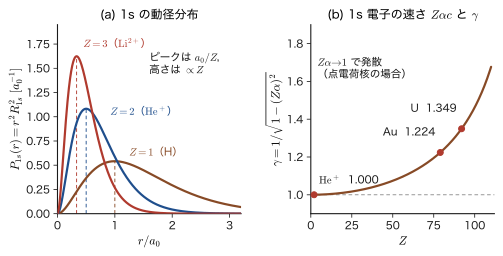
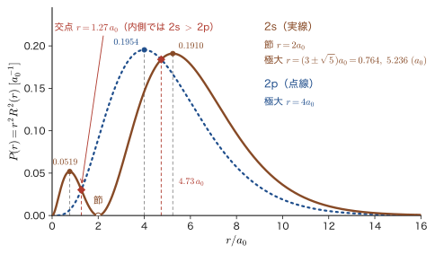
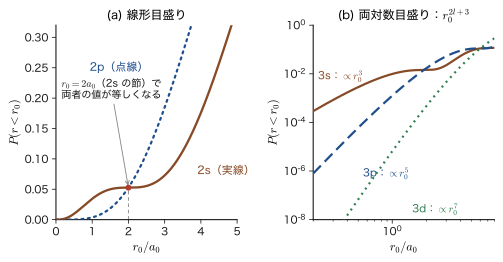
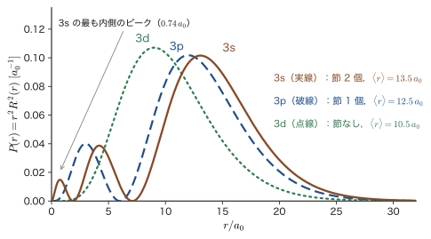
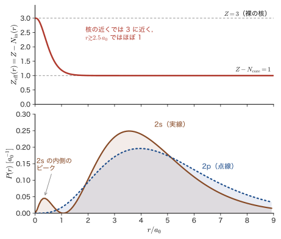
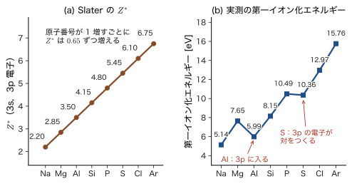
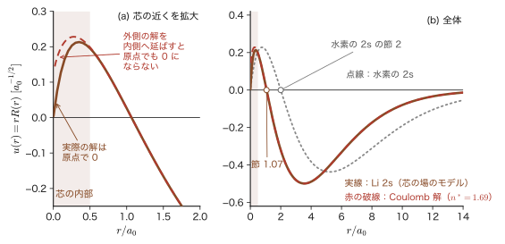
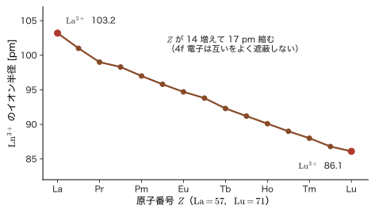

第18章遮蔽と浸透 — 水素様イオンから多電子原子へ
リチウム（Li，原子番号 3）は電子を 3 個もつが，化学的にはほとんど「電子を 1 個だけもつ原子」のように振る舞う．内側の 1s 電子 2 個が，原子核の電荷 $+3e_0$ の大部分を打ち消してしまうので，最外殻の 2s 電子は，電荷が $+1$ に近い核のまわりを回っているように感じるからである．ただし「$+1$ に近い」は「ちょうど $+1$」ではない．Li の 2s 電子をはぎとるエネルギー（第一イオン化エネルギー）は $5.39\ \mathrm{eV}$ で，水素原子の $n=2$ の準位の結合エネルギー $3.40\ \mathrm{eV}$ よりずっと大きい．しかも，同じ $n=2$ の 2p 電子の結合エネルギーは約 $3.5\ \mathrm{eV}$ で，水素の値にほとんど等しい．水素原子では 2s と 2p は同じエネルギーをもつ（前章までに見た縮退）のに，Li では 2s が 2p より $1.8\ \mathrm{eV}$ も低い．s と p の間に，なぜこれほどの差が生じるのだろうか．
答えは，遮蔽（しゃへい，screening）と浸透（しんとう，penetration）という，ひとつの効果の 2 つの面である．古典力学では，一様な球殻の内側の点には力がはたらかず，外側の点には殻の全質量が中心にあるかのように力がはたらく（殻定理．AD 03 第8章 8.5）．静電気でも同じで，内側にある電子の雲は，外側の電子にとっては核の位置に置いた負電荷と同じ働きをして，核の電荷を打ち消す（遮蔽）．ところが量子力学では電子は点ではなく雲である．外側の電子の雲の一部は，内側の電子の雲を突き抜けて核のすぐそばまで潜り込み，そこでは遮蔽されない裸に近い核の電荷を感じる（浸透）．どれだけ潜り込めるかは，動径方向の分布 $P(r)=r^2R^2$（第17章）で決まり，$l$ が小さいほど核に近づく．2s は 2p より核の近くに顔を出すので，より強い引力を受けて低いエネルギーになる．
この 2 つの効果は，周期表の並び，イオン化エネルギーの周期性，アルカリ金属の炎色反応（Li の赤，Na の黄），K で 3d より先に 4s が埋まる理由，遷移金属の 3d 電子が内殻のように振る舞う理由，ランタノイド収縮，そして金が金色に見える理由まで，材料の性質の多くを説明する．この章では，水素様原子（第15〜17章）の結果だけを出発点にして，多電子原子を「1 個の電子の問題」＋「実効核電荷」として理解する道具——動径分布からの浸透の読み方，殻定理，実効核電荷 $Z_{\mathrm{eff}}$，Slater の規則，量子欠損——をひととおり整える．多電子の波動関数を本格的に扱う第VII部（第34章など）では，ここで作った直観を繰り返し使う．
- 水素様イオンの核電荷 $Z$ を変えると，波動関数・エネルギー・軌道の大きさ・電子の速さがどうスケールするか（$E\propto Z^2$，$r\propto1/Z$，$v/c=Z\alpha/n$）を，Schrödinger 方程式の変数変換から導き，He$^+$，Li$^{2+}$，U$^{91+}$ に適用すること
- 動径分布関数 $P(r)=r^2R^2$ から，2s が 2p より核に近づくこと（浸透）を読み取り，$P(r\lt r_0)\propto r_0^{2l+3}$ と，$r_0=a_0$ 内の確率が 2s で 2p の約 9.4 倍になることを計算すること
- 遮蔽・実効核電荷 $Z_{\mathrm{eff}}$ を殻定理（Gauss の法則）から $Z_{\mathrm{eff}}(r)=Z-N_{\mathrm{in}}(r)$ として導き，Li，He，特性 X 線（Moseley の法則）で確かめること
- Slater の規則で有効な核電荷 $Z^*$ を計算し（Fe の 3d は $6.25$，4s は $3.75$），その使い方と限界を述べること
- 水素の $l$ 縮退が多電子原子でなぜ解けるか（$E_{ns}\lt E_{np}\lt E_{nd}\lt E_{nf}$）を浸透で説明し，量子欠損 $\delta_l$ と Rydberg の式で Na・Li の準位と炎色反応を扱うこと．K で 4s が 3d より先に埋まる理由を述べること
- ランタノイド収縮，4f 電子の遮蔽，重い元素（Au）の相対論効果を，遮蔽と浸透の言葉で定性的に理解すること
もとにしたノート：望月泰英『物理学ノート 量子力学2』 pp. 59–60（および pp. 49，54，56 の関連箇所）．
電子配置の書き方と用語（先取り）
この章では，原子の電子配置を，軌道の名前 $nl$ の右上に，そこに入っている電子の数を添えて書く．たとえば Li は $1s^22s^1$（1s 軌道に 2 個，2s 軌道に 1 個）である．電子は 2 種類のスピンの向き（上向き↑と下向き↓．第IV部，第23章）をもち，Pauli の排他原理（第33章）により，同じ軌道には電子は 2 個までしか入れない．したがって，s は 1 つの軌道（電子 2 個まで），p は 3 つの軌道（6 個まで），d は 5 つ（10 個まで），f は 7 つ（14 個まで）である．内側にある詰まった殻を芯（core），いちばん外側の殻の電子を価電子（valence electron）とよぶ．希ガスと同じ詰まった配置は元素記号で略して，$[\mathrm{Ar}]=1s^22s^22p^63s^23p^6$，$[\mathrm{Kr}]$，$[\mathrm{Xe}]$ のように書く．電子をどの軌道にどの順に入れていくかは第34章（Madelung の規則）で扱う．この章では，配置は与えられたものとして使う．
18.1 水素様イオン — 核電荷 $Z$ によるスケーリング
18.1.1 問題の設定 — 電荷 $+Ze_0$ の核と電子 1 個
原子番号 $Z$ の原子から電子を $Z-1$ 個取り去ったイオン（H，$\mathrm{He^+}$，$\mathrm{Li^{2+}}$，$\mathrm{Be^{3+}}$，……）は，電子が 1 個だけなので水素原子と同じ形の問題になる．これらを水素様イオン（hydrogen-like ion）とよぶ．核の電荷を $+Ze_0$（本書では電気素量を $e_0$ と書く．AD 03 の $e$ と同じ量）とし，核は電子よりずっと重いので原点に固定して考えると，電子（質量 $m_{\mathrm e}$，電荷 $-e_0$）の定常状態は，第15章の式で $e_0^2$ を $Ze_0^2$ に置き換えた
\begin{equation} -\frac{\hbar^2}{2m_{\mathrm e}}\nabla^2\psi-\frac{Ze_0^2}{4\pi\varepsilon_0\,r}\,\psi=E\,\psi \label{eq:18-tise} \end{equation}を満たす（核の質量が有限であることの補正は 18.1.5 節）．ポテンシャル $-Ze_0^2/(4\pi\varepsilon_0r)$ は $Z$ の値によらず球対称である．変数分離 $\psi=R(r)\,Y_l^m(\theta,\varphi)$ の角度部分の方程式は，ポテンシャルの $r$ 依存性にはよらないので，第15章と全く同じになり，球面調和関数 $Y_l^m$ は $Z$ が変わっても変化しない．$Z$ が入るのは動径方程式だけである．したがって，核電荷を $+e_0$ から $+Ze_0$ に変えると，変化するのは動径波動関数 $R_{n,l}(r)$ とエネルギー $E_n$ だけである．
第16章の公式 16.1，16.2 は，最初から $Z$ を含めて書いてあった．その形をもう一度確認しておく．
\begin{equation} E_n=-\frac{m_{\mathrm e}e_0^4}{8\varepsilon_0^2h^2}\frac{Z^2}{n^2}=-\frac{\hbar^2}{2m_{\mathrm e}a_0^2}\frac{Z^2}{n^2}=-13.606\ \mathrm{eV}\times\frac{Z^2}{n^2},\qquad a_0=\frac{4\pi\varepsilon_0\hbar^2}{m_{\mathrm e}e_0^2} \label{eq:18-En} \end{equation} \begin{equation} R_{n,l}(r)=c_{n,l}\,\frac{e^{-\rho/2}}{r}\sum_{k=2l+1}^{n+l}\frac{(-1)^{k+1}\{(n+l)!\}^2}{(k-2l-1)!\,k!\,(n+l-k)!}\,\rho^{\,k-l},\qquad \rho=\frac{2Zr}{n\,a_0},\quad c_{n,l}=\sqrt{\frac{Z}{a_0}\frac{(n-l-1)!}{n^2\{(n+l)!\}^3}} \label{eq:18-Rnl} \end{equation}ここで，式 \eqref{eq:18-En} の 2 番目の等号の右側の因子 $\hbar^2/(2m_{\mathrm e}a_0^2)$ は，$a_0$ の定義を代入すると $m_{\mathrm e}e_0^4/\bigl(2(4\pi\varepsilon_0)^2\hbar^2\bigr)$ になって 1 番目の表式と一致する．次元は $[\mathrm{J^2\,s^2}]/[\mathrm{kg\,m^2}]=[\mathrm{J}]$ でエネルギーである．
式 \eqref{eq:18-Rnl} で注目してほしいのは，$a_0$ と $Z$ が，いつも $Z/a_0$ という組でしか現れないことである．$\rho$ の中の $Z/a_0$ と，規格化定数 $c_{n,l}$ の中の $Z/a_0$ の 2 か所だけで，$Z$ を単独で含む場所はない．つまり，核電荷を $Z$ 倍にすることは，長さの単位 $a_0$ を $a_0/Z$ に取り替えることと同じである．これを，Schrödinger 方程式そのものの変数変換から示そう．
18.1.2 スケーリング則 — 核電荷 $Z$ は長さの単位を $a_0/Z$ にする
導出：$Z$ を含む方程式から $Z=1$ の方程式へ
[i] 無次元化．長さを $a_0$，エネルギーを $E_{\mathrm h}\equiv\hbar^2/(m_{\mathrm e}a_0^2)$（Hartree エネルギー．$27.211\ \mathrm{eV}=2\times13.606\ \mathrm{eV}$）を単位にして，$s=r/a_0$，$\varepsilon=E/E_{\mathrm h}$ とおく．$\nabla^2=a_0^{-2}\nabla_s^2$（$\nabla_s$ は $s$ についての微分）だから，運動エネルギーの項は $-\dfrac{\hbar^2}{2m_{\mathrm e}}\nabla^2=E_{\mathrm h}\Bigl(-\dfrac12\nabla_s^2\Bigr)$ となる．Coulomb 項は，$a_0$ の定義 $\dfrac{e_0^2}{4\pi\varepsilon_0}=\dfrac{\hbar^2}{m_{\mathrm e}a_0}$ を使うと
$$ \frac{Ze_0^2}{4\pi\varepsilon_0\,r}=\frac{Z}{a_0 s}\cdot\frac{\hbar^2}{m_{\mathrm e}a_0}=E_{\mathrm h}\,\frac{Z}{s} $$となる．式 \eqref{eq:18-tise} を $E_{\mathrm h}$ で割ると，
\begin{equation} \Bigl(-\frac12\nabla_s^2-\frac{Z}{s}\Bigr)\psi=\varepsilon\,\psi \label{eq:18-tise-au} \end{equation}という，物理定数を含まない方程式になる（この無次元化を原子単位系とよぶ．第33章で体系的に導入する）．
[ii] $Z$ を長さの単位に吸収する．新しい変数 $t=Zs=Zr/a_0$ を導入する．$\nabla_s^2=Z^2\nabla_t^2$，$Z/s=Z^2/t$ だから，式 \eqref{eq:18-tise-au} は
$$ Z^2\Bigl(-\frac12\nabla_t^2-\frac{1}{t}\Bigr)\psi=\varepsilon\,\psi \qquad\text{すなわち}\qquad \Bigl(-\frac12\nabla_t^2-\frac{1}{t}\Bigr)\psi=\frac{\varepsilon}{Z^2}\,\psi $$となる．これは，変数 $t$ で書いた $Z=1$ の水素原子の方程式である．その固有値は $\varepsilon/Z^2=-\dfrac{1}{2n^2}$，固有関数は $Z=1$ の波動関数 $\psi^{(1)}_{nlm}(t,\theta,\varphi)$ だから，
$$ \varepsilon_n=-\frac{Z^2}{2n^2}\ ,\qquad \psi_{nlm}(r,\theta,\varphi)=C\,\psi^{(1)}_{nlm}\!\left(\frac{Zr}{a_0},\theta,\varphi\right) $$となる．[iii] 規格化．$\displaystyle\int\abs{\psi}^2\dd^3r=\abs{C}^2\int\abs{\psi^{(1)}(Zr/a_0)}^2\dd^3r=\abs{C}^2\Bigl(\frac{a_0}{Z}\Bigr)^3\int\abs{\psi^{(1)}(t)}^2\dd^3t=\abs{C}^2\Bigl(\frac{a_0}{Z}\Bigr)^3$（体積要素 $\dd^3r=(a_0/Z)^3\dd^3t$）．これが $1$ であるためには $C=(Z/a_0)^{3/2}$ でなければならない．
（導出終わり）
次の公式の右辺で，$\psi^{(1)}(x,\theta,\varphi)$，$R_{n,l}(x;1)$，$P_{nl}(x;1)$ は，$a_0$ を長さの単位にとって（$a_0=1$ とおいて）書いた $Z=1$ の水素原子の関数を，無次元の変数 $x=r/a_0$ の関数と見たものである．したがって，それらの次元（$R$ は長さの $-3/2$ 乗，$P$ は長さの $-1$ 乗）は，前にかかる $(Z/a_0)^{3/2}$ や $Z/a_0$ が与える．
公式18.1 水素様イオンのスケーリング
$Z=1$ の水素原子の解 $\psi^{(1)}_{nlm}$，$R_{n,l}(r;1)$，$E_n(1)$ がわかれば，核電荷 $+Ze_0$ の解は次で与えられる（量子数 $n,l,m$ は変わらない）．
\begin{equation} \psi_{nlm}(r,\theta,\varphi)=\Bigl(\frac{Z}{a_0}\Bigr)^{3/2}\psi^{(1)}_{nlm}\!\Bigl(\frac{Zr}{a_0},\theta,\varphi\Bigr),\qquad R_{n,l}(r;Z)=\Bigl(\frac{Z}{a_0}\Bigr)^{3/2}R_{n,l}\!\Bigl(\frac{Zr}{a_0};1\Bigr),\qquad E_n(Z)=Z^2E_n(1) \label{eq:18-scale} \end{equation}その結果，動径分布関数（18.2 節）と長さの期待値は次のようにスケールする．
\begin{equation} P_{nl}(r;Z)=r^2R_{n,l}(r;Z)^2=\frac{Z}{a_0}\,P_{nl}\!\Bigl(\frac{Zr}{a_0};1\Bigr),\qquad \expval{r^k}_{Z}=\Bigl(\frac{1}{Z}\Bigr)^{k}\expval{r^k}_{Z=1}\ ,\qquad \expval{r}_{nl}=\frac{a_0}{2Z}\bigl\{3n^2-l(l+1)\bigr\} \label{eq:18-Pscale} \end{equation}節の位置（$R_{n,l}$ が $0$ になる $r$）も，$Z=1$ の値の $1/Z$ 倍になる．
式 \eqref{eq:18-Pscale} の最後の式は，第17章の一般公式 $\expval{r}_{n,l}=\frac{a_0}{Z}\,n^2\bigl\{1+\frac12\bigl(1-\frac{l(l+1)}{n^2}\bigr)\bigr\}$ を整理したものである．また，スケーリングを使えば，$P_{nl}(r;Z)$ の最大値は $Z=1$ の値の $Z$ 倍になり，その位置は $1/Z$ 倍になる．

18.1.3 大きさ・エネルギー・速さは $Z$ でどうかわるか
公式18.1 から，$Z$ を大きくしたときの変化が，次のようにまとまる．
- 大きさは $1/Z$ 倍：電子の分布の広がり（$\expval{r}$，最頻の位置，節の位置）は，すべて水素の $1/Z$ 倍に縮む．核の電荷が大きいほど，電子は強く引きつけられて核に近づく．1s 軌道でいえば，$\expval{r}_{1s}=\dfrac{3a_0}{2Z}$，最頻半径は $a_0/Z$ である．
- エネルギーは $Z^2$ 倍：$E_n\propto Z^2$．直観的には，電子を半径 $\sim a_0/Z$ に閉じ込めると，不確定性原理により運動量が $\sim Z\hbar/a_0$ になり，運動エネルギーは $\sim Z^2\hbar^2/(2m_{\mathrm e}a_0^2)$．一方，ポテンシャルエネルギーは $-Ze_0^2/(4\pi\varepsilon_0r)\sim-Z\cdot Z\,e_0^2/(4\pi\varepsilon_0a_0)$ で，これも $Z^2$ に比例する．どちらも $Z^2$ に比例するから，全エネルギーも $Z^2$ に比例する（ビリアル定理．第17章 17.4）．
- 電子の速さは $Z$ 倍：$\expval{T}=-E_n=\dfrac{\hbar^2}{2m_{\mathrm e}a_0^2}\dfrac{Z^2}{n^2}$（ビリアル定理）から，運動量の 2 乗平均は
となる（2 つ目の等号は $\hbar/a_0=m_{\mathrm e}e_0^2/(4\pi\varepsilon_0\hbar)=m_{\mathrm e}e_0^2/(2\varepsilon_0h)$ による）．$\expval{p^2}$ は $l$ によらず $n$ と $Z$ だけで決まる．運動量ベクトルそのものの期待値 $\expval{\bm{p}}$ は，電子が向きを変えながら動くので $\bm{0}$ になる（第17章 17.1.6）．速さの目安には，運動量の大きさの 2 乗平均の平方根 $\sqrt{\expval{p^2}}$ を使い，$v\equiv\sqrt{\expval{p^2}}/m_{\mathrm e}$ と書くことにする．微細構造定数 $\alpha=\dfrac{e_0^2}{4\pi\varepsilon_0\hbar c}\approx\dfrac{1}{137.036}$ を使うと，$\hbar/(m_{\mathrm e}a_0)=\alpha c$ だから
\begin{equation} v=\frac{\sqrt{\expval{p^2}}}{m_{\mathrm e}}=\frac{Z\hbar}{n\,m_{\mathrm e}a_0}=\frac{Z\alpha}{n}\,c=\frac{e_0^2Z}{2\varepsilon_0hn}\qquad\Bigl(\text{水素の 1s：}v=\alpha c=2.1877\times10^6\ \mathrm{m/s}\Bigr) \label{eq:18-v} \end{equation}である．核の電荷が大きいほど，電子は速く動く．特に内殻の 1s 電子（$n=1$）は，$v/c=Z\alpha$ となり，重い元素では光速に無視できない大きさに近づく．
特殊相対性理論では，速さ $v$ で動く電子の質量は $m=m_{\mathrm e}/\sqrt{1-(v/c)^2}=\gamma\,m_{\mathrm e}$ になる（AD 03 第54章 54.6，第57章 57.6）．速さが増すと質量が増え，Bohr 半径は $a_0\propto1/m_{\mathrm e}$ だから軌道が縮み，準位は深くなる（速さを固定して質量だけを置き換えた粗い見積りで，厳密には Dirac 方程式で扱う．第63章）．本書のここまでの計算は，$v\ll c$ として非相対論的な Schrödinger 方程式で行ったので，$Z\alpha$ が小さい間だけ信用できる．図18.1(b) は，1s 電子の $\gamma$ が原子番号とともにどう増すかを示す．軽い元素では $\gamma\approx1$ だが，Au や U では $20$〜$35\ \%$ も 1 からずれる．この相対論的な効果が，材料の性質（金の色や水銀の液体状態）に効いてくることを 18.6 節で見る．
例題18.1 $\mathrm{He^+}$，$\mathrm{Li^{2+}}$，$\mathrm{U^{91+}}$ の 1s 電子
水素様イオン $\mathrm{He^+}$（$Z=2$），$\mathrm{Li^{2+}}$（$Z=3$），$\mathrm{U^{91+}}$（$Z=92$）の 1s 状態について，エネルギー $E_1$，平均半径 $\expval{r}_{1s}$，電子の速さの目安 $v/c$ を求めよ．$\mathrm{U^{91+}}$ については，非相対論的な計算がどれほど信用できるかも述べよ．$a_0=52.918\ \mathrm{pm}$，$E_1(1)=-13.606\ \mathrm{eV}$，$\alpha=1/137.036$ とする．
解答 公式18.1 と式 \eqref{eq:18-v} を $n=1,\ l=0$ で使う．$\expval{r}_{1s}=\dfrac{3a_0}{2Z}$（式 \eqref{eq:18-Pscale} で $n=1,\ l=0$：$\dfrac{a_0}{2Z}\cdot3$），$E_1=-13.606\,Z^2\ \mathrm{eV}$，$v/c=Z\alpha$．
- $\mathrm{He^+}$：$E_1=-13.606\times4=-54.42\ \mathrm{eV}$．$\expval{r}=\dfrac{3\times52.918}{2\times2}=39.69\ \mathrm{pm}$．$v/c=\dfrac{2}{137.036}=0.0146$．
- $\mathrm{Li^{2+}}$：$E_1=-13.606\times9=-122.45\ \mathrm{eV}$．$\expval{r}=\dfrac{3\times52.918}{2\times3}=26.46\ \mathrm{pm}$．$v/c=\dfrac{3}{137.036}=0.0219$．
- $\mathrm{U^{91+}}$：$E_1=-13.606\times92^2=-13.606\times8464=-1.152\times10^5\ \mathrm{eV}=-115.2\ \mathrm{keV}$．$\expval{r}=\dfrac{3\times52.918}{2\times92}=0.863\ \mathrm{pm}$．$v/c=\dfrac{92}{137.036}=0.671$．
$\mathrm{U^{91+}}$ では 1s 電子の速さが光速の $2/3$ に達するので，非相対論的な値は信用できない．点電荷の核について Dirac 方程式（第62章，第63章）を解くと，1s の結合エネルギーは $m_{\mathrm e}c^2\bigl\{1-\sqrt{1-(Z\alpha)^2}\bigr\}=511.0\ \mathrm{keV}\times\{1-\sqrt{1-0.4507}\}=511.0\times0.2589=132.3\ \mathrm{keV}$ であり，非相対論の $115.2\ \mathrm{keV}$ より約 $15\ \%$ 大きい．一方 $\mathrm{He^+}$ と $\mathrm{Li^{2+}}$ の相対論的な補正は $(Z\alpha)^2\sim10^{-4}$ 程度であり，無視してよい．
例題18.2 Au の 1s 電子の相対論的質量と Bohr 半径の収縮
金（Au，$Z=79$）の 1s 電子について，速さの目安 $v/c$ と $\gamma=1/\sqrt{1-(v/c)^2}$ は第17章の例題17.3で求めた（$v/c=Z\alpha=0.5765$，$\gamma=1.224$）．この値を使って，質量の増加によって Bohr 半径がどれだけ縮むかを見積もれ．
解答 $\gamma=1.224$ より，質量は静止質量の $1.224$ 倍（約 $22\ \%$ 増）になる．Bohr 半径 $a_0=4\pi\varepsilon_0\hbar^2/(m_{\mathrm e}e_0^2)$ は質量に反比例するから，$m_{\mathrm e}\to\gamma m_{\mathrm e}$ とすると $a_0\to a_0/\gamma$，つまり $1/\gamma=0.817$ 倍に縮む（約 $18\ \%$ の収縮）．これは，速さを固定して質量だけを置き換えた粗い見積りだが，s 軌道が相対論的に収縮するという定性的な結論は，第63章の Dirac 方程式の取り扱いでも変わらない．この収縮が金の色にどう効くかは 18.6.3 節で述べる．
18.1.4 $Z$ を含む波動関数の表
公式18.1 を使うと，第16章の波動関数の表を，そのまま $Z$ を含む形で書ける．核の位置での密度 $\abs{\psi_{ns}(0)}^2=Z^3/(\pi n^3a_0^3)$ は，$Z$ の 3 乗に比例する．$\rho=2Zr/(na_0)$ として，最初の 3 つを書いておく．
\begin{align} \psi_{1s}&=\frac{1}{\sqrt{\pi}}\Bigl(\frac{Z}{a_0}\Bigr)^{3/2}e^{-Zr/a_0}\ ,\qquad \psi_{2s}=\frac{1}{4\sqrt{2\pi}}\Bigl(\frac{Z}{a_0}\Bigr)^{3/2}\Bigl(2-\frac{Zr}{a_0}\Bigr)e^{-Zr/2a_0}\ ,\notag\\ \psi_{2p_z}&=\frac{1}{4\sqrt{2\pi}}\Bigl(\frac{Z}{a_0}\Bigr)^{3/2}\frac{Zr}{a_0}\,e^{-Zr/2a_0}\cos\theta \label{eq:18-psi-Z} \end{align}（$n=2$ では $\rho=Zr/a_0$，$n=1$ では $\rho/2=Zr/a_0$．）3s，3p，3d も同様で，第16章の表で $r/a_0$ を $Zr/a_0$ に，$a_0^{-3/2}$ を $(Z/a_0)^{3/2}$ に置き換えればよい．たとえば，$x=Zr/a_0$ とおくと，
\begin{align} \psi_{3s}&=\frac{1}{81\sqrt{3\pi}}\Bigl(\frac{Z}{a_0}\Bigr)^{3/2}\bigl(27-18x+2x^2\bigr)e^{-x/3}\ ,\qquad \psi_{3p_z}=\frac{\sqrt2}{81\sqrt{\pi}}\Bigl(\frac{Z}{a_0}\Bigr)^{3/2}x\,(6-x)\,e^{-x/3}\cos\theta\ ,\notag\\ \psi_{3d_{z^2}}&=\frac{1}{81\sqrt{6\pi}}\Bigl(\frac{Z}{a_0}\Bigr)^{3/2}x^2e^{-x/3}\,(3\cos^2\theta-1) \label{eq:18-psi3-Z} \end{align}となる（$\rho=2x/3$ を使うと，$\psi_{3s}=\dfrac{1}{18\sqrt{3\pi}}\bigl(\dfrac{Z}{a_0}\bigr)^{3/2}(6-6\rho+\rho^2)e^{-\rho/2}$ とも書ける）．$R_{n,l}$ の中の $a_0$ の役割を，$Z$ が変わると $a_0/Z$ が引き継ぐ，と覚えておけばよい．
18.1.5 $Z$ 以外のスケーリング — 換算質量
応用：換算質量を変えても同じスケーリングが起きる
核の質量が有限（$M$）のときは，$m_{\mathrm e}$ を換算質量 $\mu=m_{\mathrm e}M/(m_{\mathrm e}+M)$ に置き換えればよい（第15章 15.1）．すると $a_0\to a_0m_{\mathrm e}/\mu$，$E_n\to E_n\,\mu/m_{\mathrm e}$ とスケールする．核電荷の増加も，質量の増加も，「電子をより強く核に束縛する」という同じ役割を果たす．質量を変えた系（ミューオン水素，ポジトロニウム）と，誘電率の大きな物質の中の水素型の系（半導体の励起子）の具体的な数値は，第15章 15.6.6 節（例題15.12，15.13）にある．
18.2 動径分布関数が語る「浸透」— 2s は 2p より核に近づく
18.2.1 動径分布関数 — 核から距離 $r$ の薄い球殻に電子を見いだす確率
電子が原子核からどれだけ離れたところにいるかを調べるには，第17章で導入した動径分布関数を使う．もう一度定義しておく．
定義18.1 動径分布関数
水素様原子の状態 $\psi_{nlm}=R_{n,l}(r)\,Y_l^m(\theta,\varphi)$ の電子を，核から距離 $r$ と $r+\dd r$ の間の薄い球殻の中に見いだす確率は，角度部分を $\displaystyle\int\abs{Y_l^m}^2\sin\theta\,\dd\theta\,\dd\varphi=1$ と規格化しているので，$P_{nl}(r)\,\dd r$ と書ける．
\begin{equation} P_{nl}(r)\equiv r^2R_{n,l}(r)^2\qquad\Bigl(\int_0^\infty P_{nl}(r)\,\dd r=1\Bigr) \label{eq:18-Pdef} \end{equation}を $(n,l)$ の動径分布関数（radial distribution function）とよぶ．因子 $r^2$ は，半径 $r$ の球殻の体積が $4\pi r^2\dd r$ であることに由来する．$P_{nl}$ は $m$ によらず，長さの逆数の次元をもつ．
$R_{n,l}(r)^2$ は，位置 $r$ の周りの単位体積あたりの確率（の動径部分）で，$P_{nl}(r)=r^2R_{n,l}^2$ は，同じ半径の球面全体をまとめて，単位長さあたりの確率にしたものである．核に近い場所は，$R^2$ が大きくても球殻の体積が小さいので，$P$ に寄与しにくい．核に近い領域の確率を論じるときは，この $r^2$ の効きを忘れてはならない．
18.2.2 2s と 2p の動径分布関数
まず，$n=2$ の 2 つの副殻 2s（$l=0$）と 2p（$l=1$）を比べる．水素原子（$Z=1$）の動径関数は，原点の近くで正になる標準形で，
\begin{equation} R_{2,0}(r)=\frac{1}{2\sqrt2}\,a_0^{-3/2}\Bigl(2-\frac{r}{a_0}\Bigr)e^{-r/2a_0},\qquad R_{2,1}(r)=\frac{1}{2\sqrt6}\,a_0^{-3/2}\,\frac{r}{a_0}\,e^{-r/2a_0} \label{eq:18-R2} \end{equation}である（第16章 16.2，16.3）．これを 2 乗して $r^2$ をかける．$R_{2,0}^2=\dfrac{1}{8a_0^3}\dfrac{(2a_0-r)^2}{a_0^2}e^{-r/a_0}=\dfrac{(r-2a_0)^2}{8a_0^5}e^{-r/a_0}$（$(2-r/a_0)^2=(2a_0-r)^2/a_0^2=(r-2a_0)^2/a_0^2$ に注意），$R_{2,1}^2=\dfrac{1}{24a_0^3}\dfrac{r^2}{a_0^2}e^{-r/a_0}=\dfrac{r^2}{24a_0^5}e^{-r/a_0}$ だから，
公式18.2 2s と 2p の動径分布関数
\begin{equation} P_{2,0}(r)=r^2R_{2,0}(r)^2=\frac{1}{8a_0^5}\,r^2\,(r-2a_0)^2\,e^{-r/a_0},\qquad P_{2,1}(r)=r^2R_{2,1}(r)^2=\frac{1}{24a_0^5}\,r^4\,e^{-r/a_0} \label{eq:18-P2} \end{equation}核電荷 $Ze_0$ のときは，公式18.1 により，右辺の $r$ を $Zr$ に置き換えて全体に $Z$ をかければよい（$a_0$ はそのまま残す）．
この 2 つの関数を描いたのが図18.2 である．2s は実線，2p は点線で描いてある．

この図から，次のことが読み取れる．
- 2p は，核の近くで急に小さくなり（$P_{2,1}\propto r^4$），$r=4a_0$ に 1 つだけピークをもつ．節はない．
- 2s は，核のごく近く（$r\lesssim1.3a_0$）では 2p よりずっと大きい（$P_{2,0}\approx r^2/(2a_0^3)$ で，2p の $r^4$ より低い次数で立ち上がる）．原点から立ち上がって $0.764a_0$ に小さな山をつくり，$r=2a_0$ で $0$ になる（節．$R_{2,0}$ が符号を変える）．その外側に大きな主ピーク $5.236\,a_0$ があり，2p のピーク（$4a_0$）よりさらに外側にある．
- 2s の主ピークと 2p のピークの高さは，ほぼ等しい（$0.191$ と $0.195$）．
例題18.3 2s の極大と節を式から求める
公式18.2 の $P_{2,0}$ と $P_{2,1}$ の極大の位置と高さ，および $P_{2,0}$ の節を求めよ．さらに，2 つの曲線 $P_{2,0}$ と $P_{2,1}$ が交わる位置を求め，どこで 2s の方が大きいかを述べよ（$a_0=1$ の単位で）．
解答 $a_0=1$ として $P_{2,0}=\dfrac18\,f(r)^2e^{-r}$，$f(r)\equiv r(r-2)=r^2-2r$ とおく．積の微分で
$$ \frac{\dd P_{2,0}}{\dd r}=\frac18\Bigl(2ff'e^{-r}-f^2e^{-r}\Bigr)=\frac18\,f\,\bigl(2f'-f\bigr)e^{-r} $$となる．$f'=2r-2$ より $2f'-f=4r-4-r^2+2r=-(r^2-6r+4)$．よって $\dd P_{2,0}/\dd r=0$ の解は，$f=0$（$r=0,\ 2$．ここでは $P_{2,0}=0$ なので極小＝節）と，$r^2-6r+4=0$（$r=3\pm\sqrt5$）である．節の位置は $R_{2,0}\propto(2-r)$ が $0$ になる $r=2a_0$ で，$P_{2,0}$ がそこで $0$ になる（下に凸な極小）．極大の位置は $r_-=3-\sqrt5=0.7639$ と $r_+=3+\sqrt5=5.2361$ で，高さは
$$ P_{2,0}(r_-)=\frac{1}{8}(0.7639)^2(0.7639-2)^2e^{-0.7639}=\frac18\times0.5836\times1.5279\times0.4658=0.0519,\qquad P_{2,0}(r_+)=\frac{1}{8}(5.2361)^2(3.2361)^2e^{-5.2361}=\frac18\times27.416\times10.472\times0.005321=0.1910 $$（$a_0^{-1}$ を単位とする）．$P_{2,1}=\dfrac{1}{24}r^4e^{-r}$ は $\dfrac{\dd P_{2,1}}{\dd r}=\dfrac{1}{24}(4r^3-r^4)e^{-r}=\dfrac{1}{24}r^3(4-r)e^{-r}$ が $0$ になる $r=4$（$r=0$ は最小）で極大となり，高さは $P_{2,1}(4)=\dfrac{4^4e^{-4}}{24}=\dfrac{256}{24}\times0.018316=0.1954$ である．
以上から，2s の主ピークは $5.236a_0$ で高さ $0.191$，2p のピークは $4a_0$ で高さ $0.195$ と，高さはほぼ等しいことが確かめられた．
交点は $P_{2,0}=P_{2,1}$，すなわち $\dfrac18r^2(r-2)^2e^{-r}=\dfrac1{24}r^4e^{-r}$ から求まる．両辺を $r^2e^{-r}/24$ で割ると $3(r-2)^2=r^2$，つまり $\sqrt3\,\lvert r-2\rvert=r$ となる．$r\lt2$ では $\sqrt3(2-r)=r$ より $r=\dfrac{2\sqrt3}{1+\sqrt3}=1.268$，$r\gt2$ では $\sqrt3(r-2)=r$ より $r=\dfrac{2\sqrt3}{\sqrt3-1}=4.732$ である．$r\lt1.268a_0$ と $r\gt4.732a_0$ では 2s の方が大きく，$1.268a_0\lt r\lt4.732a_0$ では 2p の方が大きい（たとえば $r=1.5a_0$ で 2s $0.0157$，2p $0.0471$）．2s が核のごく近くでだけ 2p を上回ることに注意する．
18.2.3 「浸透」— 核に近いところで見つかる確率は s 軌道の方が高い
図18.2 を見ると，陽子（原子核）にごく近い領域（$r\lesssim1.27a_0$．2 本の曲線の交点は $r=2\sqrt3\,a_0/(1+\sqrt3)=1.27a_0$，例題18.3）では，2s の曲線が 2p の曲線よりはるかに上にある．すなわち，陽子に近いところで電子が見つかる確率は，2p 軌道より 2s 軌道の方が高い．交点より外側の $1.27a_0\lt r\lt2a_0$ では，2s は節（$r=2a_0$）に向かって $0$ になるので 2p の方が大きい．しかし，原点から $r_0$ までの累積の確率 $P(r\lt r_0)$ を比べると，$r_0\lt2a_0$ の全範囲で 2s の方が大きい（例題18.4）．これは，2s 軌道にいる電子の方が，2p 軌道にいる電子よりも，核に強く引きつけられる場所に多く存在しているということである．この性質を浸透という．
定義18.2 浸透
電子の分布が，内側にある電子の雲（内殻）を突き抜けて，原子核の近くまで入り込む性質を浸透（penetration）という．同じ主量子数 $n$ の副殻の間では，方位量子数 $l$ が小さいほど浸透が大きい：$ns>np>nd>nf$ の順に浸透する．
水素原子のように内殻がない場合も，核の近く（$r\lt r_0$）で電子が見いだされる確率 $P(r\lt r_0)$（公式18.3）が大きいことを，浸透が大きいという．多電子原子では，この領域が内殻の電子の雲より内側にあたるので，そこにいる電子は遮蔽をまぬがれる（18.3 節）．
なぜ $l$ が小さいほど核に近づけるのだろうか．第14章で見たとおり，角運動量をもつ電子には遠心力ポテンシャル $\hbar^2l(l+1)/(2m_{\mathrm e}r^2)$ がはたらく．古典力学の有効ポテンシャルと同じである（AD 03 第8章 8.4）．これは $r$ が小さくなるほど急に大きくなる斥力で，$l\ge1$ の電子が核の近くへ入ることを妨げる．古典的な Kepler 運動の言葉でいえば，角運動量が小さい楕円軌道ほど近日点（核に最も近い点）が中心に近くなり，$l\to0$ の極限で軌道は中心を通り抜ける細長い楕円になる．s 軌道（$l=0$）には遠心力の壁がないので，電子は核のすぐそばまで到達できる．この事実は，次の公式のように，$r\to0$ での振る舞いに正確に現れる．
公式18.3 原点の近くの動径関数と，核の近くの球内の確率
水素様原子の $R_{n,l}$ は，原点の近く（$r\ll na_0/Z$）で $R_{n,l}(r)\approx C_{n,l}\,r^{\,l}$ と振る舞う．
\begin{equation} C_{n,l}=\frac{1}{(2l+1)!}\Bigl(\frac{2Z}{na_0}\Bigr)^{l+3/2}\sqrt{\frac{(n+l)!}{2n\,(n-l-1)!}} \label{eq:18-C} \end{equation}したがって，動径分布は $P_{nl}(r)\approx C_{n,l}^2\,r^{2l+2}$，半径 $r_0$ の球の内側に電子を見いだす確率は
\begin{equation} P(r\lt r_0)=\int_0^{r_0}P_{nl}(r)\,\dd r\approx\frac{C_{n,l}^2}{2l+3}\,r_0^{\,2l+3}\qquad(r_0\ll na_0/Z) \label{eq:18-Pnear} \end{equation}である．つまり，核の近くの球に入る確率は $r_0^{2l+3}$ に比例し，$l$ が 1 増えるごとに $r_0^2$ 倍だけ小さくなる．
導出：式 \eqref{eq:18-C} と式 \eqref{eq:18-Pnear}
第16章の標準形 $R_{n,l}=\sqrt{\bigl(\tfrac{2Z}{na_0}\bigr)^3\tfrac{(n-l-1)!}{2n\,(n+l)!}}\;e^{-\rho/2}\rho^{\,l}L_{n-l-1}^{(2l+1)}(\rho)$，$\rho=2Zr/(na_0)$ を使う．$r\to0$ では $e^{-\rho/2}\to1$，Laguerre 陪多項式の値は $L_p^{(\alpha)}(0)=\dbinom{p+\alpha}{p}$ だから，$p=n-l-1$，$\alpha=2l+1$ とおいて $L_{n-l-1}^{(2l+1)}(0)=\dfrac{(n+l)!}{(n-l-1)!\,(2l+1)!}$ となる．$\rho^l=(2Z/na_0)^lr^l$ とあわせると，
$$ C_{n,l}=\Bigl(\frac{2Z}{na_0}\Bigr)^{3/2+l}\sqrt{\frac{(n-l-1)!}{2n\,(n+l)!}}\cdot\frac{(n+l)!}{(n-l-1)!\,(2l+1)!}=\frac{1}{(2l+1)!}\Bigl(\frac{2Z}{na_0}\Bigr)^{l+3/2}\sqrt{\frac{(n+l)!}{2n\,(n-l-1)!}} $$を得る（$\sqrt{x}$ の中の $(n-l-1)!/(n+l)!$ と，外の $(n+l)!/(n-l-1)!$ の積が $\sqrt{(n+l)!/(n-l-1)!}$ になることを使った）．次に，$P_{nl}=r^2R^2\approx C^2r^{2l+2}$ を $0$ から $r_0$ まで積分すると $C^2r_0^{2l+3}/(2l+3)$ となる．
（導出終わり）
公式18.3 を，2s と 2p で確かめてみよう．$Z=1$，$a_0=1$ のとき，式 \eqref{eq:18-C} は 2s（$n=2,l=0$）で $C_{2,0}=\bigl(\tfrac{2}{2}\bigr)^{3/2}\sqrt{\tfrac{2!}{4\cdot1!}}=\tfrac{1}{\sqrt2}$，2p（$n=2,l=1$）で $C_{2,1}=\tfrac{1}{3!}\bigl(\tfrac22\bigr)^{5/2}\sqrt{\tfrac{3!}{4\cdot0!}}=\tfrac16\sqrt{\tfrac32}=\tfrac{1}{2\sqrt6}$ となり，式 \eqref{eq:18-R2} の $r\to0$ の係数（$R_{2,0}(0)=1/\sqrt2$，$R_{2,1}\approx r/(2\sqrt6)$）に一致する．したがって $P(r\lt r_0)\approx\dfrac{r_0^3}{6}$（2s），$\dfrac{r_0^5}{120}$（2p）である．2s と 2p の比は $P_{2s}/P_{2p}\approx20\,a_0^2/r_0^2$ となり，核に近づくほど急速に大きくなる．ただし，この式は $r_0$ が十分小さいときの近似で，$r_0=0.5a_0$ では約 80 倍，$r_0=a_0$ では約 20 倍と，次の例題の厳密な値（56 倍，9.4 倍）より大きめに出る．
例題18.4 浸透の定量化 — $r_0$ の球内に入る確率
水素原子の 2s と 2p について，半径 $r_0$ の球の内側に電子が見いだされる確率 $P(r\lt r_0)$ の厳密な式を求め，$r_0=0.5a_0$ と $a_0$ の値と，2s と 2p の比を求めよ．また，2s と 2p の確率を比べたとき，$r_0$ がどこまでなら 2s の方が大きいか．
解答 $a_0=1$ とし，$x=r_0$ と書く．$S_m\equiv\sum_{j=0}^{m}x^j/j!$ とおく（$S_m'=S_{m-1}$，$S_m-S_{m-1}=x^m/m!$）．積分公式
$$ \int_0^{x}r^ke^{-r}\dd r=k!\bigl\{1-e^{-x}S_k\bigr\} $$を使う．この公式は，両辺を $x$ で微分して確かめられる．左辺の微分は $x^ke^{-x}$，右辺の微分は $k!\,e^{-x}(S_k-S_k')=k!\,e^{-x}(S_k-S_{k-1})=k!\,e^{-x}\dfrac{x^k}{k!}=x^ke^{-x}$ で一致し，$x=0$ で両辺とも $0$ である（部分積分を $k$ 回繰り返しても得られる）．
2p：$P_{2,1}=\dfrac{r^4e^{-r}}{24}$ だから，$P_{2p}(\lt x)=\dfrac{1}{24}\cdot4!\{1-e^{-x}S_4\}=1-e^{-x}S_4$．
2s：$P_{2,0}=\dfrac18(r^4-4r^3+4r^2)e^{-r}$ だから，
$$ P_{2s}(\lt x)=\frac18\Bigl[4!\{1-e^{-x}S_4\}-4\cdot3!\{1-e^{-x}S_3\}+4\cdot2!\{1-e^{-x}S_2\}\Bigr] =1-e^{-x}\bigl(3S_4-3S_3+S_2\bigr) $$（$24-24+8=8$，$8/8=1$ を使った．）$S_4-S_3=x^4/24$ だから $3S_4-3S_3+S_2=3\cdot\dfrac{x^4}{24}+S_2=\dfrac{x^4}{8}+1+x+\dfrac{x^2}{2}$ となり，
\begin{equation} P_{2s}(\lt r_0)=1-e^{-r_0}\Bigl(1+r_0+\frac{r_0^2}{2}+\frac{r_0^4}{8}\Bigr),\qquad P_{2p}(\lt r_0)=1-e^{-r_0}\Bigl(1+r_0+\frac{r_0^2}{2}+\frac{r_0^3}{6}+\frac{r_0^4}{24}\Bigr) \label{eq:18-cum2} \end{equation}である（$r_0$ は $a_0$ を単位とする）．数値を入れる．
$r_0=0.5$：$e^{-0.5}=0.60653$．$P_{2s}=1-0.60653\times(1+0.5+0.125+0.0078125)=1-0.60653\times1.6328=0.00965$．$P_{2p}=1-0.606531\times(1+0.5+0.125+0.020833+0.0026042)=1-0.606531\times1.648438=1.72\times10^{-4}$（1 にごく近い数どうしの引き算なので，桁落ちに注意して多めの桁で計算する）．比は $0.00965/1.72\times10^{-4}=56$ 倍．
$r_0=1$：$e^{-1}=0.36788$．$P_{2s}=1-0.36788\times(1+1+0.5+0.125)=1-0.36788\times2.625=0.0343$．$P_{2p}=1-0.36788\times(1+1+0.5+0.16667+0.041667)=1-0.36788\times2.7083=0.00366$．比は $9.4$ 倍．
2 つの差をとると，式 \eqref{eq:18-cum2} から $P_{2s}-P_{2p}=e^{-r_0}\bigl(\tfrac{r_0^3}{6}+\tfrac{r_0^4}{24}-\tfrac{r_0^4}{8}\bigr)=\dfrac{r_0^3(2-r_0)}{12}\,e^{-r_0}$ となる．これは $r_0\lt2a_0$ で正，$r_0=2a_0$ で $0$，$r_0\gt2a_0$ で負である．つまり，2s の方が大きいのは $r_0\lt2a_0$，すなわち 2s の節の半径までで，$r_0=2a_0$ でちょうど等しく（$0.0527$），それより外側では，2p の方が球内の確率が大きい．
この結果を図にしたのが図18.3 である．同じ計算を 3s，3p，3d について行うと，表18.1 の値を得る．$l$ が 1 増えるごとに，内側の球に入る確率は桁違いに小さくなる．
| 軌道 | $r_0=0.5\,a_0$ | $r_0=a_0$ | $r_0\to0$ の振る舞い |
|---|---|---|---|
| 2s | $9.65\times10^{-3}$ | $3.43\times10^{-2}$ | $r_0^3/6$ |
| 2p | $1.72\times10^{-4}$ | $3.66\times10^{-3}$ | $r_0^5/120$ |
| 3s | $2.84\times10^{-3}$ | $9.87\times10^{-3}$ | $\propto r_0^3$ |
| 3p | $6.0\times10^{-5}$ | $1.26\times10^{-3}$ | $\propto r_0^5$ |
| 3d | $6.8\times10^{-8}$ | $6.5\times10^{-6}$ | $\propto r_0^7$ |

18.2.4 平均半径では逆転する — 2s の方が 2p よりも遠くにいる？
ここで一見矛盾するように見える事実がある．第17章で計算した平均の半径 $\expval{r}_{nl}=\dfrac{a_0}{2Z}\{3n^2-l(l+1)\}$ を並べてみよう．
例18.1 同じ殻の $\expval{r}$ — $l$ が小さいほど平均は外側
式 \eqref{eq:18-Pscale} を $Z=1$ で使うと，
$$ \expval{r}_{2s}=6a_0,\quad\expval{r}_{2p}=5a_0;\qquad \expval{r}_{3s}=13.5\,a_0,\quad\expval{r}_{3p}=12.5\,a_0,\quad\expval{r}_{3d}=10.5\,a_0 $$である（1s は $1.5a_0$，4s は $24a_0$）．$l$ が大きい（角運動量が大きい）ほど，同じ $n$ の中で平均半径は小さくなる：$\expval{r}_{3d}\lt\expval{r}_{3p}\lt\expval{r}_{3s}$．これを，半径が $\expval{r}$ の同心円で表したのが図18.4 である（第17章の図17.4と同じ図）．
「2s は 2p より外側にある」のに，「2s は 2p より核の近くにもいる」．この 2 つは矛盾しない．どちらも，2s の動径分布が二山の形をしていることの帰結である．$\expval{r}$ は分布全体の重心のようなもので，確率の大部分を占める外側の大きな山の位置でほぼ決まる．2s の外側の山は，2p の山より外側にある（$5.24a_0$ 対 $4a_0$）．その理由は，直観的には次のように理解できる（厳密には式 \eqref{eq:18-Pscale} の結果で，s 軌道ほど遠心力の壁がなく，節の数も多いので，外へ広がる）．2s は 1s と直交しなければならない（第16章）．1s は核の近くに集中しているので，2s は核の近くで符号を反転して（節を作って）内側の 1s と直交し，その代償として残りの確率が外側に押し出される．一方，2p には 1s と直交させるための節が要らず，内側に広がったままでよい．核の近くの小さな山は，確率としては小さい（$r\lt2a_0$ の全確率は，2s も 2p も $5\ \%$ 程度）が，そこでは核の Coulomb ポテンシャル（$\propto1/r$）が強く，エネルギーへの寄与が大きい（18.3 節，18.5 節）．

なぜ浸透するとエネルギーが下がるのか
水素原子では，$\expval{1/r}_{nl}=Z/(n^2a_0)$ が $l$ によらず $n$ だけで決まる（$\expval{V}=-\dfrac{Ze_0^2}{4\pi\varepsilon_0}\expval{1/r}$ も $l$ によらない）．だから 2s と 2p は，浸透に差があっても，エネルギーは同じである．これが水素原子の $l$ 縮退（Coulomb 縮退）の正体である．ところが，原子核のポテンシャルが完全な $-1/r$ でなくなる（内側の電子雲の遮蔽で，$-Z_{\mathrm{eff}}(r)/r$ の $Z_{\mathrm{eff}}$ が $r$ とともに減る）と，事情が変わる．$Z_{\mathrm{eff}}$ が大きいのは核に近い領域だけなので，その領域に電子が多く入り込む s 軌道ほど，ポテンシャルエネルギーが大きく下がる．遠くから見ると同じ $-1/r$ でも，核の近くだけ深くなった井戸に，浸透の大きい軌道ほど深く入る．これが，浸透と軌道エネルギーの関係である（18.3 節で定量化する）．
応用：核の位置の電子密度は s 電子だけがもつ
式 \eqref{eq:18-C} で $l=0$ のときだけ $C_{n,0}\ne0$ となる．$l\ge1$ では $R_{n,l}(0)=0$ で，核の位置での電子密度 $\abs{\psi(0)}^2$ は s 電子だけがもつ：$\abs{\psi_{ns}(0)}^2=\dfrac{Z^3}{\pi n^3a_0^3}$．この量は，核に直接触れる電子のはたらきを決める．たとえば，Mössbauer 分光の異性体シフトは，核の位置の電子密度（つまり s 電子の密度）を測っており，Fe の酸化状態の判別に使われる．3d 電子は核の位置に密度をもたないが，3d 電子の数が変わると内側の s 電子の遮蔽が変わるので，異性体シフトに間接的に効く．金属の Knight シフトや，有機ラジカルの超微細結合（Fermi 接触相互作用）も，s 電子の $\abs{\psi(0)}^2$ に比例する．
18.3 遮蔽と実効核電荷 — 殻定理から $Z_{\mathrm{eff}}(r)$ へ
18.3.1 遮蔽 — 核の電荷が内側の電子に打ち消される
電子を 2 個以上もつ原子では，1 個の電子は，原子核からの Coulomb 力（引力）だけでなく，他の電子からの反発力も受ける．他の電子の負電荷は，核の正電荷を打ち消す向きにはたらくので，注目する電子にとっては，核の電荷が実際より小さく見える．これが遮蔽である．
定義18.3 遮蔽と実効核電荷
多電子原子で，ある電子が感じる原子核の電荷が，他の電子によって，全電荷 $Ze_0$ から $Z_{\mathrm{eff}}\,e_0$ にまで下がることを遮蔽（screening，shielding）という．$Z_{\mathrm{eff}}$ を実効核電荷（effective nuclear charge），差
\begin{equation} \sigma\equiv Z-Z_{\mathrm{eff}} \label{eq:18-sigma} \end{equation}を遮蔽定数（shielding constant）という．
例18.2 Li の実効核電荷
Li（$Z=3$）の 2s 電子について，原子核の全電荷は $3e_0$ だが，内側の 1s 電子 2 個が電荷 $-2e_0$ をもつので，そのまま完全に打ち消されれば $Z_{\mathrm{eff}}=1$ になるはずである．実際に 2s 電子が感じる実効核電荷は，およそ $1.3e_0$ である（Slater の規則では $1.30$．18.4 節）．つまり，2 個の 1s 電子は核電荷を $\sigma\approx1.7$ しか遮蔽していない（完全な遮蔽なら $\sigma=2$ だから，$85\ \%$ の遮蔽）．「$1$ でなく $1.3$」になる理由は，2s 電子の一部が 1s の雲の内側に浸透して，遮蔽されていない核電荷を感じるからである（次項以降）．
記号：$Z_{\mathrm{eff}}$，$Z^*$，$Z'$ の使い分け
実効的な核電荷を表す記号は，文脈によって使い分ける．本書では，$Z_{\mathrm{eff}}$ を一般の実効核電荷（定義18.3．「遮蔽された結果，電子が感じる核電荷」という意味の一般名．以下で位置 $r$ の関数 $Z_{\mathrm{eff}}(r)$ としても使う），$Z^*$ を Slater の規則で決まる値（18.4 節），$Z'$ を変分パラメータとしての有効核電荷（第30，31章．18.3.4 節の He）と書く．$n$ と $n^*$（有効主量子数）の関係，$\delta_l$（量子欠損．Dirac の $\delta$ 関数や Kronecker の $\delta_{ij}$ とは無関係）は 18.4，18.5 節で導入する．このほか，遮蔽定数 $\sigma$（定義18.3）は，スピン変数や Pauli 行列 $\sigma_x,\sigma_y,\sigma_z$（第IV部）とは別の量，有効主量子数 $n^*$ は振動数の $\nu$ とは別の量である．$Z_E$ は，準位のエネルギーを水素様の式 $E=-13.606\ \mathrm{eV}\times Z_E^2/n^2$ に当てはめて逆算した実効核電荷で，例題18.5 で使う．
18.3.2 殻定理 — 内側の電子の電荷は核の位置に集めてよい
遮蔽の大きさを定量的に見積もるために，他の電子の電荷が注目する電子にどんな力を及ぼすかを調べる．鍵になるのは，古典静電気学の殻定理である．重力についての殻定理（AD 03 第8章 8.5）は，静電気でも Coulomb の法則が逆 2 乗則であることから，全く同じ形で成り立つ（AD 03 第35章 35.3，35.5）．
定理18.1 殻定理（静電気）
電荷が球対称に分布している（電荷密度が中心からの距離 $r'$ だけの関数である）とき，中心から距離 $r$ にある点電荷 $q$ が受ける力は，半径 $r$ の球の内側にある電荷の総量 $Q_{\mathrm{in}}(r)$ だけが中心に集まったとしたときの Coulomb 力に等しい：
\begin{equation} F_r=\frac{q\,Q_{\mathrm{in}}(r)}{4\pi\varepsilon_0\,r^2} \label{eq:18-shell} \end{equation}（$F_r>0$ が斥力．）半径 $r$ より外側にある電荷は，$q$ に力を及ぼさない．
証明
電荷分布が球対称なので，電場 $\bm{E}$ は中心から放射状で，大きさ $E_r$ は $r$ だけの関数である．中心が同じで半径 $r$ の球面 $S$ を考え，Gauss の法則 $\oint_S\bm{E}\cdot\dd\bm{S}=Q_{\mathrm{in}}(r)/\varepsilon_0$ を適用する．左辺は，$E_r$ が球面上で一定だから $E_r\cdot4\pi r^2$ となり，
$$ 4\pi r^2E_r=\frac{Q_{\mathrm{in}}(r)}{\varepsilon_0}\qquad\therefore\quad E_r=\frac{Q_{\mathrm{in}}(r)}{4\pi\varepsilon_0\,r^2} $$を得る．点電荷 $q$ が受ける力は $F_r=qE_r$ で，式 \eqref{eq:18-shell} になる．右辺に含まれるのは $S$ の内側の電荷 $Q_{\mathrm{in}}(r)$ だけで，外側の電荷は現れない．
（証明終わり）
これを原子に適用しよう．核（電荷 $+Ze_0$）のまわりに，$N$ 個の電子がある．そのうちの 1 個（注目する電子）が距離 $r$ の位置にあるとき，この電子に力を及ぼすのは，核と，他の $N-1$ 個の電子である．他の電子の雲を平均した球対称な電荷分布とみなし，中心から半径 $r$ の球の内側にある他の電子の数（平均値）を $N_{\mathrm{in}}(r)$ と書く．すると，半径 $r$ の球の内側の総電荷は $Q_{\mathrm{in}}=Ze_0-N_{\mathrm{in}}(r)e_0$ で，注目する電子（電荷 $-e_0$）が受ける力は，式 \eqref{eq:18-shell} から
\begin{equation} F_r=-\frac{\bigl\{Z-N_{\mathrm{in}}(r)\bigr\}\,e_0^2}{4\pi\varepsilon_0\,r^2} \label{eq:18-force} \end{equation}となる（負号は引力）．これは，電荷 $\{Z-N_{\mathrm{in}}(r)\}e_0$ の核が原点にあるときの力と同じである．すなわち，半径 $r$ の内側にある電子は，核の位置に置いた負電荷と同じはたらきをして，核の電荷を打ち消す．これが，図18.6 の意味である．半径 $r_0$ の球の内側にいる電子は，その外側にいる電子にとって，原子核にある点の電荷として扱ってよい（そのため遮蔽が起こる）．
定義18.4 位置に依存する実効核電荷 $Z_{\mathrm{eff}}(r)$
式 \eqref{eq:18-force} の力を $F_r=-Z_{\mathrm{eff}}(r)\,e_0^2/(4\pi\varepsilon_0r^2)$ と書いたときの
\begin{equation} Z_{\mathrm{eff}}(r)\equiv Z-N_{\mathrm{in}}(r),\qquad N_{\mathrm{in}}(r)=\int_0^{r}n_{\mathrm{other}}(r')\,4\pi r'^2\,\dd r' \label{eq:18-Zeffr} \end{equation}を，位置 $r$ にいる電子にとっての実効核電荷とよぶ．$n_{\mathrm{other}}(r')$ は他の電子の（球対称に平均した）数密度である．
この定義から，次の 2 つの極限がただちにわかる．
- $r\to0$：核のすぐそばでは，内側に他の電子がない（$N_{\mathrm{in}}\to0$）ので，$Z_{\mathrm{eff}}(0)=Z$（遮蔽されない裸の核の電荷）．
- $r\to\infty$：原子の外側では，他の電子 $N-1$ 個がすべて内側に入るので，$Z_{\mathrm{eff}}(\infty)=Z-(N-1)$．中性原子（$N=Z$）なら $1$，つまり遠くの電子は $+e_0$ の電荷をもつイオン（原子核＋$N-1$ 個の電子）の Coulomb 場だけを感じる．Li では $3-2=1$，Na では $11-10=1$ である．
$Z_{\mathrm{eff}}$ は定数ではなく，$r$ の関数である．「1.3」のような 1 つの数は，浸透の分布で重みをつけて平均した，ならしの値と思わなければならない．位置エネルギー $V(r)$ は，力（式 \eqref{eq:18-force}）を外側から積分したもので，$V(r)=-\dfrac{e_0^2}{4\pi\varepsilon_0}\displaystyle\int_r^\infty\dfrac{Z_{\mathrm{eff}}(s)}{s^2}\dd s$ である．$Z_{\mathrm{eff}}$ が定数のときに限って $V=-Z_{\mathrm{eff}}e_0^2/(4\pi\varepsilon_0r)$ となり，水素様の形に戻る．
注意：$Z_{\mathrm{eff}}(r)$ は平均場の近似での量
式 \eqref{eq:18-Zeffr} では，他の電子の雲を，注目する電子と無関係な，固定した球対称の電荷分布と見なした．実際には，電子どうしは互いの位置に応じて反発し合い（電子相関），同種粒子の交換による効果（Pauli の排他原理に由来する交換相互作用）もある．また，注目する電子自身の電荷は $N_{\mathrm{in}}$ に含めない（自分自身は自分を遮蔽しない）．それでも，この描像は，第VII部で扱う Hartree–Fock 近似（第35章，第36章）の「各電子が，他の電子の平均的な電荷分布がつくる場の中で動く」という考え方と同じで，原子の準位の大まかな構造を理解するには十分よい出発点である．
18.3.3 Li の $Z_{\mathrm{eff}}(r)$ — 芯の 1s 電子 2 個がつくる遮蔽
殻定理を使って，Li の実効核電荷 $Z_{\mathrm{eff}}(r)$ を具体的に計算してみよう．Li の電子配置は $1s^22s$ である．2s 電子にとって，他の電子は 1s 電子 2 個（芯の電子）だけである．1s 電子の分布として，有効な核電荷 $\zeta=2.70$（Slater の規則で 1s 電子が受ける値 $3-0.30$．18.4 節）をもつ水素様の 1s 軌道 $\psi_{1s}\propto e^{-\zeta r/a_0}$ を採用する．
導出：芯の電子の数 $N_{\mathrm{in}}(r)$ と $Z_{\mathrm{eff}}(r)$
1s 電子 1 個の動径分布は $P_{1s}(r)=4\zeta^3r^2e^{-2\zeta r}$（$a_0=1$．公式18.1）である．電子 2 個のうち，半径 $r$ の内側に見いだされる数は，$x'=2\zeta r'$ と置換して（$r'=x'/2\zeta$，$\dd r'=\dd x'/2\zeta$，$x=2\zeta r$），
$$ N_{\mathrm{in}}(r)=2\int_0^{r}4\zeta^3r'^2e^{-2\zeta r'}\dd r'=2\int_0^{x}4\zeta^3\frac{x'^2}{4\zeta^2}e^{-x'}\frac{\dd x'}{2\zeta}=\int_0^{x}x'^2e^{-x'}\dd x'=2\Bigl\{1-e^{-x}\Bigl(1+x+\frac{x^2}{2}\Bigr)\Bigr\} $$となる（最後の等号は，18.2 節の積分公式 $\int_0^xx'^ke^{-x'}\dd x'=k!\{1-e^{-x}\sum_{j\le k}x^j/j!\}$ を $k=2$ で使った）．したがって，
\begin{equation} Z_{\mathrm{eff}}(r)=3-2\Bigl\{1-e^{-x}\Bigl(1+x+\frac{x^2}{2}\Bigr)\Bigr\},\qquad x=\frac{2\zeta r}{a_0}=\frac{5.4\,r}{a_0} \label{eq:18-ZeffLi} \end{equation}（導出終わり）
式 \eqref{eq:18-ZeffLi} を描いたのが図18.7 の上の図である．$r=0$ で $3$，$r=0.5a_0$ で約 $2.0$，$r=a_0$ で約 $1.19$，$r\gtrsim2.5a_0$ で $1$ になる．すなわち，1s 電子の雲（半径 $\sim0.5a_0$）の内側では，遮蔽が効かずに $Z_{\mathrm{eff}}$ が 3 に近く，外側では 2 個の 1s 電子に完全に遮蔽されて 1 になる．2s 電子の分布（下の図）を重ねると，内側の小さな山は核に近い領域（$Z_{\mathrm{eff}}\approx2\sim3$）に，外側の大きな山は $Z_{\mathrm{eff}}=1$ の領域にある．全体をならした値が，前項の $1.3$ 程度になる．2p 電子は内側の山をほとんどもたないので，ならした値は $1$ に近い．

例題18.5 芯の場の中の 2s と 2p のエネルギー — 数値計算
Li の 1s 電子 2 個を上の $\zeta=2.70$ の水素様 1s 軌道に固定し，2s または 2p 電子の動径方程式を数値的に解け．エネルギーと実効核電荷を，水素の $n=2$ の値（$-3.40\ \mathrm{eV}$）と，実測（2s：$-5.39\ \mathrm{eV}$，2p：$-3.54\ \mathrm{eV}$）と比べよ．
解答 固定した芯の電荷がつくる静電ポテンシャルは，核 $+3e_0$ と，電荷密度 $\rho_{1s}=\zeta^3e^{-2\zeta r}/\pi$ の 1s 電子 2 個の分だけを足して（原子単位で），
$$ V(r)=-\frac{3}{r}+\frac{2}{r}\Bigl\{1-e^{-2\zeta r}(1+\zeta r)\Bigr\} $$である（第2項は，電荷 2 個分の球対称な分布が $r$ に作る電位．外側の電荷の寄与も含む）．これを $u(r)=rR(r)$ の動径方程式（原子単位）
$$ \Bigl[-\frac12\frac{\dd^2}{\dd r^2}+V(r)+\frac{l(l+1)}{2r^2}\Bigr]u=\varepsilon\,u $$に入れて，次のように差分化する．$r$ を等間隔の格子 $r_i=ih$（$i=1,\dots,N$，$h=r_{\max}/N$，$r_{\max}=150\,a_0$，$N=60\,000$）にとり，$u_i=u(r_i)$ と書く．端点の条件は $u_0=u_{N+1}=0$（原点で $u=0$，遠方で $u\to0$）である．2 階微分を $u''(r_i)\approx(u_{i+1}-2u_i+u_{i-1})/h^2$ で置き換えると，
$$ -\frac{1}{2h^2}\,u_{i-1}+\Bigl[\frac{1}{h^2}+V(r_i)+\frac{l(l+1)}{2r_i^2}\Bigr]u_i-\frac{1}{2h^2}\,u_{i+1}=\varepsilon\,u_i $$となる．これは，対角成分が $d_i=1/h^2+V(r_i)+l(l+1)/(2r_i^2)$，隣り合う成分がすべて $-1/(2h^2)$ の 3 重対角行列の固有値問題である．固有値を小さい順に並べると，波動関数の節の数が 0 個，1 個，2 個，……の状態に対応する（節が多いほど運動エネルギーが大きい）．したがって $l=0$ では，1 番目が節のない 1s 型の解（$-32.5\ \mathrm{eV}$．本来の 1s 電子は芯として固定してあるので，計算には使わない），2 番目が節が 1 個の 2s であり，$l=1$ では 1 番目が節のない 2p である．10 行ほどの Python で解ける．
import numpy as np
from scipy.linalg import eigh_tridiagonal
zeta, Z, rmax, N = 2.70, 3, 150.0, 60000
r = np.linspace(rmax / N, rmax, N) # r_i = i h (i = 1, ..., N)
h = r[1] - r[0]
V = -Z / r + (2 / r) * (1 - np.exp(-2 * zeta * r) * (1 + zeta * r)) # 芯の場（原子単位）
for l in (0, 1):
d = 1 / h**2 + V + l * (l + 1) / (2 * r**2) # 対角成分
e = -0.5 / h**2 * np.ones(N - 1) # 隣り合う成分
w, u = eigh_tridiagonal(d, e, select="i", select_range=(0, 1)) # 小さい方から 2 つ
print(l, w * 27.2114) # eV に換算出力は $l=0$ で $-32.46,\ -4.757$，$l=1$ で $-3.426,\ -1.520$（$\mathrm{eV}$）である．2s は $l=0$ の 2 番目（$-4.757\ \mathrm{eV}$），2p は $l=1$ の 1 番目（$-3.426\ \mathrm{eV}$）であり，結果は次の表のとおりになる（$l=1$ の 2 番目は 3p）．
| 水素の $n=2$ | 芯の場のモデル | 実測（Li） | |
|---|---|---|---|
| 2s | $3.40\ \mathrm{eV}$ | $4.76\ \mathrm{eV}$ | $5.39\ \mathrm{eV}$ |
| 2p | $3.40\ \mathrm{eV}$ | $3.43\ \mathrm{eV}$ | $3.54\ \mathrm{eV}$ |
| 2s と 2p の差 | $0$ | $1.33\ \mathrm{eV}$ | $1.85\ \mathrm{eV}$ |
| エネルギーから決めた $Z_E=n\sqrt{\lvert E\rvert/13.606\ \mathrm{eV}}$ （2s，2p） | $1,\ 1$ | $1.18,\ 1.00$ | $1.26,\ 1.02$ |
ここで $Z_E$ は，準位を水素様の式 $E=-13.606\ \mathrm{eV}\times Z_E^2/n^2$ で表したときの実効核電荷である．芯のモデルは，2s と 2p の順序（2s が深い）と，2p がほぼ水素と同じ一方，2s だけが大きく下がるという浸透の効果を，定性的にはっきり再現している．2s のエネルギーが実測に足りないのは，1s の雲を固定して交換相互作用と芯の変形を無視したためである．
18.3.4 He の実効核電荷 — 変分原理で決まる遮蔽
電子が 2 個の He は，多電子原子の最も簡単な例である．2 個の電子が，同じ形の水素様の 1s 軌道 $\propto e^{-Z'r/a_0}$ に入っているとして，$Z'$ を変分パラメータとし，エネルギーが最小になる $Z'$ を求めると，これが He の 1s 電子の実効核電荷になる（第30章，第31章）．
例題18.6 He の実効核電荷 $Z'=27/16$
He（$Z=2$）の試行関数 $\Phi(\bm{r}_1,\bm{r}_2)=\psi_{1s}^{(Z')}(r_1)\,\psi_{1s}^{(Z')}(r_2)$（$\psi_{1s}^{(Z')}=\pi^{-1/2}(Z'/a_0)^{3/2}e^{-Z'r/a_0}$）のエネルギーを求め，最小になる $Z'$ と，そのときのエネルギーを求めよ．実験値 $-79.0\ \mathrm{eV}$ と比べよ．
解答 原子単位（Hartree）で計算する．水素様 1s 軌道（核電荷 $Z'$）の運動エネルギーは $Z'^2/2$，$\expval{1/r}=Z'$ だから，2 個の電子の運動エネルギーの和は $\expval{T}=2\times\dfrac{Z'^2}{2}=Z'^2$，核との引力は，核電荷が $Z=2$ なので $\expval{V_{\mathrm{ne}}}=-2\times Z\expval{1/r}=-2ZZ'$ となる．電子間の反発 $\expval{V_{\mathrm{ee}}}=\expval{1/r_{12}}$ は，2 個の 1s 電子の分布の Coulomb 積分で，標準的な積分により $\dfrac58Z'$ となる（第31章）．したがって
$$ E(Z')=Z'^2-2ZZ'+\frac58Z'\quad[\text{Hartree}] $$である．$\dfrac{\dd E}{\dd Z'}=2Z'-2Z+\dfrac58=0$ より $Z'=Z-\dfrac{5}{16}=2-0.3125=1.6875=\dfrac{27}{16}$．最小値は $E=Z'^2-2ZZ'+\tfrac58Z'=Z'(Z'-2Z+\tfrac58)=Z'(-Z')=-Z'^2$（$2Z'-2Z+\tfrac58=0$ より $Z'-2Z+\tfrac58=-Z'$）だから $E_{\min}=-\bigl(\tfrac{27}{16}\bigr)^2=-\dfrac{729}{256}=-2.8477$ Hartree．$1$ Hartree $=27.211\ \mathrm{eV}$ より $E_{\min}=-77.49\ \mathrm{eV}$ である．遮蔽のない $Z'=2$ では $E=4-8+1.25=-2.75$ Hartree $=-74.83\ \mathrm{eV}$ だから，遮蔽（$Z'$ が 2 から 1.6875 へ下がる）のおかげで $2.66\ \mathrm{eV}$ 低くなっている．実験値（He の全エネルギー $-79.0\ \mathrm{eV}$．2 つのイオン化エネルギー $24.59+54.42$ の和）とは $1.5\ \mathrm{eV}$（約 $2\ \%$）の差である．
もう 1 つの電子による遮蔽定数は $\sigma=Z-Z'=5/16=0.3125$ で，1 でなく約 $0.31$ である．片方の電子は，他方を完全には遮蔽しない．この値は，Slater の規則で「同じ 1s 電子の遮蔽は $0.30$」（18.4 節）とされていることに対応する．関連シミュレーター（$Z'$ を動かして He の全エネルギーの最小点を探す）：変分原理 — 有効核電荷を振って He の全エネルギーを探す．
18.3.5 実験で見る遮蔽 — 特性 X 線と Moseley の法則
遮蔽は，原子の内殻の電子を叩き出して出る特性 X 線で，はっきりと確かめられる．1s 軌道（K 殻）に空席（電子の欠けた状態）ができたとき，2p 軌道から 1s へ電子が落ちて出す X 線を Kα 線という．遷移する電子は，核の電荷 $+Ze_0$ を，1s に残っている電子 1 個に遮蔽されて，実効的に $Z_{\mathrm{eff}}\approx Z-1$ だけを感じると考えられる．この $Z-1$ を水素様の準位の式に入れた結果，
\begin{equation} h\nu_{K\alpha}\approx10.20\ \mathrm{eV}\times(Z-1)^2 \label{eq:18-moseley} \end{equation}と，その歴史（Moseley が 1913〜14 年に，周期表の順序を決めるのは原子量ではなく原子番号 $Z$ であることを示した）は，第15章 15.6.5 節で導いた（例題15.10 で Cu，Mo，Fe の値を計算した）ので，ここでは繰り返さない．この節では，$Z$ でなく $Z-1$ になる理由が 1s 電子 1 個による遮蔽であることを，実測値から確かめる．
例題18.7 Kα 線から遮蔽定数を逆算する — Fe，Cu，Mo
式 \eqref{eq:18-moseley} の定数 $10.204\ \mathrm{eV}=\tfrac34\times13.606\ \mathrm{eV}$ を使い，実測値（Kα1 線．Fe $6.404\ \mathrm{keV}$，Cu $8.048\ \mathrm{keV}$，Mo $17.479\ \mathrm{keV}$）から，$h\nu=10.204\ \mathrm{eV}\times(Z-\sigma)^2$ の遮蔽定数 $\sigma$ を求めよ．また，遮蔽を無視して $Z$ を使うと，Cu ではどれだけずれるか．
解答 $Z-\sigma=\sqrt{h\nu/10.204\ \mathrm{eV}}$ である．Fe：$\sqrt{6404/10.204}=\sqrt{627.6}=25.05$，$\sigma=26-25.05=0.95$．Cu：$\sqrt{8048/10.204}=\sqrt{788.7}=28.08$，$\sigma=29-28.08=0.92$．Mo：$\sqrt{17479/10.204}=\sqrt{1713.0}=41.39$，$\sigma=42-41.39=0.61$．Fe と Cu では $\sigma\approx0.9$ で，1s 電子 1 個による遮蔽（$\sigma=1$）にほぼ等しい．Mo で $\sigma$ が小さく見えるのは，内殻電子の速さが光速に近づく相対論の効果などがここまで単純な模型に含まれていないためと考えられる（第63章）．遮蔽を無視して $Z=29$ を使うと，$10.204\times29^2=8582\ \mathrm{eV}=8.58\ \mathrm{keV}$ となり，実測 $8.048\ \mathrm{keV}$ より $6.6\ \%$ 大きくなってしまう．1 個の電子による遮蔽を入れるだけで $8.00\ \mathrm{keV}$（実測との差 $0.6\ \%$）に近づく．Cu の Kα 線は，X 線回折装置（波長 $0.154\ \mathrm{nm}$）に使われる線である．
18.3.6 遮蔽と浸透は同じ効果の 2 つの面
イメージ：浸透した電子ほど遮蔽されにくい
遮蔽と浸透は，別々の 2 つの効果ではなく，同じ効果を，内側から見るか外側から見るかの違いである．内側の電子の雲が核の電荷を打ち消すのが遮蔽で，外側の電子の雲がその内側の雲を突き抜けて，打ち消されていない核の電荷を感じるのが浸透である．内側の雲を突き抜ける電子は，その分だけ遮蔽されないので，実効核電荷 $Z_{\mathrm{eff}}$ が大きくなり，強く束縛される．Li の 2s と 2p の場合，$Z_E$ が $1.26$（2s）と $1.02$（2p）であるのは，2s の方がよく浸透するためである．さらに，同じ殻（同じ $n$）の電子どうしは，互いを内側に囲むことがほとんどないので，互いの遮蔽は小さい（He の $0.31$，Slater の規則の $0.35$）．
18.4 Slater の規則 — 実効核電荷を足し算で見積もる
18.4.1 規則の内容
前節では，$Z_{\mathrm{eff}}(r)$ を，他の電子の分布から出発して殻定理で計算した．しかし，これを電子の数が多い原子について，軌道ごとに数値的に求めるのは大変である．そこで，原子や軌道ごとに，実効核電荷を 1 つの数 $Z^*$ で表し，これを簡単な足し算で見積もる規則がある．Slater（スレーター）が 1930 年に，実験データと波動関数の計算から提案した経験則で，Slater の規則とよばれる．
法則18.1 Slater の規則（実効核電荷 $Z^*$ の見積り）
(1) 電子配置を，内側から次のグループに分けて書く．
$$ (1s)\ (2s,2p)\ (3s,3p)\ (3d)\ (4s,4p)\ (4d)\ (4f)\ (5s,5p)\ (5d)\ \cdots $$(2) 注目する電子の実効核電荷は $Z^*=Z-\sigma$．遮蔽定数 $\sigma$ は，他の電子 1 個ごとの寄与 $s_j$ の和 $\sigma=\sum_js_j$ で，次のように決める．
- 注目する電子より外側のグループにある電子：$s_j=0$．
- 注目する電子が ns または np のとき：同じグループの他の電子は $0.35$（1s だけは $0.30$），主量子数が $n-1$ の殻の電子は $0.85$，それより内側（$n-2$ 以下）の電子は $1.00$．
- 注目する電子が nd または nf のとき：同じグループの他の電子は $0.35$，それより内側のグループの電子はすべて $1.00$．
(3) 主量子数 $n$ の代わりに，有効主量子数 $n^*$ を使う．$n=1,2,3,4,5,6$ に対して，$n^*=1,2,3,3.7,4.0,4.2$ である．
| 遮蔽される電子 | 同じグループ | 1 つ内側の殻（$n-1$） | それより内側（$\le n-2$） |
|---|---|---|---|
| 1s | 0.30 | — | — |
| ns，np（$n\ge2$） | 0.35 | 0.85 | 1.00 |
| nd，nf | 0.35 | 内側のグループのすべて：1.00 | |
数値の意味を考えてみよう．「同じグループの電子は $0.35$（$0.30$）」は，同じ殻の電子どうしがあまり遮蔽し合わないこと（He の変分で得た $0.3125$ に近い），「ひとつ内側の殻は $0.85$」は，内側の電子の雲の一部が外側の電子の分布の中に入り込んでいて，完全には遮蔽しないこと，「さらに内側は $1.00$」は，ほぼ完全に核の近くに固まっていて，完全に遮蔽することを表す．注目する電子が d，f のとき，内側の電子に $0.85$ でなく $1.00$ を使うのは，d，f 電子はほとんど浸透せず，内側の電子の雲の外側に分布するので，内側の電子に完全に遮蔽されるとみなすからである．一方，s，p 電子は 1 つ内側の殻の電子の雲に一部入り込む（浸透する）ので，その遮蔽は $0.85$ にとどまる．同じ内側の殻の電子でも，注目する電子が d，f のときの方が遮蔽が大きい（$1.00\gt0.85$）というのが，s，p が d，f より浸透する（18.2 節）ことの，この規則の中での表れである．
18.4.2 使い方 — 計算例
例題18.8 Na 3s，Cl 3p，Fe 3d・4s，Cu 3d・4s の $Z^*$
Slater の規則で，次の $Z^*$ を求めよ．(1) Na（$Z=11$）の 3s，(2) Cl（$Z=17$）の 3p，(3) Fe（$Z=26$）の 3d と 4s，(4) Cu（$Z=29$）の 3d と 4s．
解答 電子配置は，Na：$1s^22s^22p^63s^1$，Cl：$1s^22s^22p^63s^23p^5$，Fe：$1s^22s^22p^63s^23p^63d^64s^2$，Cu：$1s^22s^22p^63s^23p^63d^{10}4s^1$ である．
| 注目する電子 | $Z$ | 同じグループ | $n-1$ の殻（0.85） | それより内側（1.00） | $\sigma$ | $Z^*=Z-\sigma$ |
|---|---|---|---|---|---|---|
| Na 3s | 11 | 0 | $8\times0.85=6.80$ | 1s$^2$：$2.00$ | 8.80 | 2.20 |
| Cl 3p | 17 | $6\times0.35=2.10$ | $8\times0.85=6.80$ | 1s$^2$：$2.00$ | 10.90 | 6.10 |
| Fe 3d | 26 | $5\times0.35=1.75$ | —（内側すべて 1.00） | $18\times1.00=18.00$ | 19.75 | 6.25 |
| Fe 4s | 26 | $1\times0.35=0.35$ | 3s3p3d：$14\times0.85=11.90$ | 1s2s2p：$10\times1.00=10.00$ | 22.25 | 3.75 |
| Cu 3d | 29 | $9\times0.35=3.15$ | —（内側すべて 1.00） | $18\times1.00=18.00$ | 21.15 | 7.85 |
| Cu 4s | 29 | 0 | 3s3p3d：$18\times0.85=15.30$ | 1s2s2p：$10\times1.00=10.00$ | 25.30 | 3.70 |
各行の計算：Na の 3s は，同じグループ（3s，3p）の他の電子がなく，$n-1=2$ の殻（2s，2p）の 8 個が $0.85$，1s の 2 個が $1.00$．Cl の 3p は，同じグループの他の 6 個（3s$^2$ と 3p$^4$）が $0.35$．Fe の 3d は，3d のグループ（3d だけ）の他の 5 個が $0.35$，内側の (1s)(2s2p)(3s3p) の $2+8+8=18$ 個が $1.00$（外側の 4s$^2$ は $0$）．Fe の 4s は，(4s4p) グループの他の 1 個が $0.35$，$n-1=3$ の殻の $8+6=14$ 個（3s，3p，3d）が $0.85$，$n-2$ 以下の $10$ 個（1s，2s，2p）が $1.00$．Cu の 3d は，3d のグループの他の 9 個が $0.35$，内側 18 個が $1.00$．Cu の 4s は，$n-1$ の殻の $8+10=18$ 個が $0.85$，$10$ 個が $1.00$．
この結果，同じ Fe 原子の中で 3d 電子は $Z^*=6.25$，4s 電子は $Z^*=3.75$ と，3d の方がずっと大きな実効核電荷を感じることがわかる．
18.4.3 $Z^*$ から軌道の広がりを見積もる — Slater 型軌道
$Z^*$ と $n^*$ は，軌道の形を決める指数 $\zeta=Z^*/n^*$ を通して使われる．Slater は，水素様原子の複雑な動径関数（ラゲール多項式）の代わりに，節をもたない簡単な形
\begin{equation} R(r)=N\,r^{\,n^*-1}\,e^{-\zeta r/a_0}\ ,\qquad \zeta=\frac{Z^*}{n^*},\qquad N=\frac{(2\zeta/a_0)^{\,n^*+1/2}}{\sqrt{(2n^*)!}} \label{eq:18-sto} \end{equation}を使うことを提案した（Slater 型軌道，Slater-type orbital，STO．規格化定数は $\int_0^\infty R^2r^2\dd r=1$ から決まる．$n^*$ が整数でないときは，階乗 $(2n^*)!$ を $\Gamma(2n^*+1)$ で置き換える）．この関数は，$n^*$ が整数で $n^*=n=l+1$ のとき（1s，2p，3d，……）に水素様の軌道と一致する．STO の平均半径は，積分公式 $\int_0^\infty r^ke^{-2\zeta r/a_0}\dd r=k!\,(a_0/2\zeta)^{k+1}$ から
\begin{equation} \expval{r}=\frac{\int_0^\infty r^{2n^*+1}e^{-2\zeta r/a_0}\dd r}{\int_0^\infty r^{2n^*}e^{-2\zeta r/a_0}\dd r}=\frac{(2n^*+1)!}{(2n^*)!}\cdot\frac{a_0}{2\zeta}=\frac{2n^*+1}{2\zeta}\,a_0=\frac{n^*(2n^*+1)}{2Z^*}\,a_0 \label{eq:18-rsto} \end{equation}である．（$n^*=n$，$l=n-1$ のときは，水素様の式 $\expval{r}=\dfrac{a_0}{2Z}\{3n^2-l(l+1)\}=\dfrac{a_0}{2Z}\,n(2n+1)$ に一致する．）これを使うと，Fe の 3d は $\zeta=6.25/3=2.083$，$\expval{r}=\dfrac{7}{2\times2.083}a_0=1.68\,a_0=0.089\ \mathrm{nm}$，4s は $\zeta=3.75/3.7=1.014$，$\expval{r}=\dfrac{8.4}{2\times1.014}a_0=4.14\,a_0=0.22\ \mathrm{nm}$ となる．同じ Fe 原子の中で，3d 電子は 4s 電子の半分以下の距離に集まっている．3d 電子は原子の内側にあり，4s 電子が原子の外縁をつくる．この結果は，遷移金属の性質（3d が内殻的であること）に直結する（18.5 節，18.6 節）．基底関数としての STO は，第VII部と姉妹編「マテリアル計算科学（AD 05）」（目次）で再び登場する．
18.4.4 周期表の傾向 — Na から Ar まで
第 3 周期の Na から Ar まで，価電子（3s，3p）の $Z^*$ を計算してみよう．価電子の数を $N_{\mathrm v}$（Na は 1，Mg は 2，……，Ar は 8）とする．同じグループの他の価電子 $N_{\mathrm v}-1$ 個が $0.35$，2s2p の 8 個が $0.85$，1s の 2 個が $1.00$ だから，
\begin{equation} \sigma=0.35\,(N_{\mathrm v}-1)+0.85\times8+2\times1.00=8.80+0.35\,(N_{\mathrm v}-1) \label{eq:18-slater-period3} \end{equation}となる．第 3 周期の原子番号は $Z=10+N_{\mathrm v}$（内側の 10 個の電子に価電子を足したもの）だから，
\begin{equation} Z^*=(10+N_{\mathrm v})-8.80-0.35\,(N_{\mathrm v}-1)=1.55+0.65\,N_{\mathrm v} \label{eq:18-Zstar3} \end{equation}である．原子番号が 1 つ増える（陽子が 1 つ，価電子が 1 つ増える）と，$Z^*$ は $1-0.35=0.65$ だけ増える．陽子の増加 $+1$ のうち，同じグループの電子が $0.35$ だけを遮蔽するからである．$N_{\mathrm v}=1,2,\dots,8$ を代入して，表18.5 と図18.8(a) の値を得る．
| 元素 | Na | Mg | Al | Si | P | S | Cl | Ar |
|---|---|---|---|---|---|---|---|---|
| $N_{\mathrm v}$ | 1 | 2 | 3 | 4 | 5 | 6 | 7 | 8 |
| $Z^*$（式 \eqref{eq:18-Zstar3}） | 2.20 | 2.85 | 3.50 | 4.15 | 4.80 | 5.45 | 6.10 | 6.75 |
| $\zeta=Z^*/3$ | 0.733 | 0.950 | 1.167 | 1.383 | 1.600 | 1.817 | 2.033 | 2.250 |
| $\expval{r}=10.5\,a_0/Z^*$ [$a_0$] | 4.77 | 3.68 | 3.00 | 2.53 | 2.19 | 1.93 | 1.72 | 1.56 |
| 第一イオン化エネルギー [eV] | 5.139 | 7.646 | 5.986 | 8.152 | 10.487 | 10.360 | 12.968 | 15.760 |

この表から，第 3 周期を左から右へ進むと，$Z^*$ は $2.2$ から $6.75$ へと 3 倍増え，軌道の広がり $\expval{r}$ は $4.8a_0$ から $1.6a_0$ へと約 $1/3$ に縮むことがわかる．電子の数（と殻）が同じでも，陽子の増加が同じ殻の電子ではほとんど遮蔽されないので，右へ行くほど原子は小さく，電子は強く束縛される．これが，イオン化エネルギーが周期の右へ行くほど大きくなり（図18.8(b) の全体の増加），原子の大きさ（原子半径）が右へ行くほど小さくなる（周期表の傾向）ことの，量子力学的な理由である．
18.4.5 規則の限界
Slater の規則は，計算が簡単で，傾向をつかむには便利だが，あくまで経験則である．主な限界を，数値で確かめておこう．
- s と p の区別がない：同じグループ（ns，np）の電子には，同じ $Z^*$ を与える．浸透の違いによる ns と np の差は，規則の中に入っていない．たとえば Li の 2s と 2p は，どちらも $Z^*=1.30$ だが，実際は $Z_E=1.26$ と $1.02$ である（表18.2）．18.5 節の準位の順序 $E_{ns}\lt E_{np}$ は，この規則からは出てこない．
- エネルギーの絶対値：水素様の式で $E\approx-13.606\ \mathrm{eV}\times(Z^*/n^*)^2$ とおいた値は，アルカリ金属でも Li の 2s で $7\ \%$，K の 4s で $11\ \%$，Na の 3s で $42\ \%$ ずれ，右側の元素（Cl の 3p で 4 倍以上）では合わない（例題18.9）．$Z^*$ が増えるという傾向は正しいが，絶対値を出すには向かない．
- $n^*$ の設定：$n^*=3.7,\ 4.0,\ 4.2$ は，$n=4,5,6$ の軌道が内殻を突き抜けて，準位が深くなる効果を，経験的に取り込んだ数字である．
- d 電子と f 電子の遮蔽の単純化：内側のグループの電子をすべて $1.00$ と扱うのは，遷移金属や希土類のイオンでは，粗い近似である．
例題18.9 $E=-13.606\,(Z^*/n^*)^2$ の精度
Slater の $Z^*$ と $n^*$ を使った軌道エネルギー $E=-13.606\ \mathrm{eV}\times(Z^*/n^*)^2$ を，Li の 2s，Na の 3s，K の 4s，Cl の 3p について計算し，実測のイオン化エネルギー（Li $5.392\ \mathrm{eV}$，Na $5.139\ \mathrm{eV}$，K $4.341\ \mathrm{eV}$，Cl $12.968\ \mathrm{eV}$）と比べよ．
解答 Li の 2s：$Z^*=3-2\times0.85=1.30$，$n^*=2$．$E=-13.606\times(1.30/2)^2=-13.606\times0.4225=-5.75\ \mathrm{eV}$．実測との差は $+0.36\ \mathrm{eV}$（$+7\ \%$）．
Na の 3s：$Z^*=2.20$，$n^*=3$．$E=-13.606\times(2.20/3)^2=-13.606\times0.5378=-7.32\ \mathrm{eV}$．実測 $5.139\ \mathrm{eV}$ より $42\ \%$ 大きい．
K の 4s：$Z^*=19-(8\times0.85+10\times1.00)=2.20$，$n^*=3.7$．$E=-13.606\times(2.20/3.7)^2=-13.606\times0.3535=-4.81\ \mathrm{eV}$．実測 $4.341\ \mathrm{eV}$ より $11\ \%$ 大きい．
Cl の 3p：$Z^*=6.10$，$n^*=3$．$E=-13.606\times(6.10/3)^2=-13.606\times4.134=-56.3\ \mathrm{eV}$．実測 $12.968\ \mathrm{eV}$ の 4 倍以上で，全く合わない．
以上のように，アルカリ金属の最外殻では，$10\ \%$ 前後から $40\ \%$ の精度で使えるが，$Z^*$ が大きい右側の元素では，そのまま使えない．$Z^*$ は，原子の大きさや軌道の形（式 \eqref{eq:18-rsto}）を決めるパラメータとして役立つが，エネルギーの決定的な見積りには向かない．エネルギーを正確に求めるには，Hartree–Fock 法（第35〜37章）や，電子相関を取り入れた方法が必要である．
18.5 軌道エネルギーの順序と量子欠損 — 水素の縮退が解ける
18.5.1 水素では $n$ だけ，アルカリ金属では $n$ と $l$ で決まる
水素原子（と水素様イオン）のエネルギーは，主量子数 $n$ だけで決まる：$E_n=-13.606\ \mathrm{eV}\times Z^2/n^2$．同じ $n$ の 2s と 2p，3s と 3p と 3d は，それぞれ同じエネルギーをもつ（$n^2$ 重に縮退している．第15章）．この縮退は，ポテンシャルが正確に $-1/r$ であることの結果である（Coulomb 縮退）．ところが，原子核のまわりに他の電子がいるアルカリ金属では，価電子が感じるポテンシャルは，遠くでは $-e_0^2/(4\pi\varepsilon_0r)$（実効核電荷 $1$）だが，近くでは $-Ze_0^2/(4\pi\varepsilon_0r)$ まで深くなる（図18.7）．このポテンシャルの $1/r$ からのずれのために，$l$ に対する縮退が解ける．浸透の大きい軌道が深く沈み，次の順序になる（同じ $n$ の中で）．
\begin{equation} E_{ns}\lt E_{np}\lt E_{nd}\lt E_{nf}\lt\cdots\qquad(\text{同じ }n) \label{eq:18-order} \end{equation}図18.9 は，水素，Li，Na の準位を並べたものである．水素では 2s と 2p が同じ高さ（$-3.40\ \mathrm{eV}$）にあるが，Li では 2s が大きく下がって $-5.39\ \mathrm{eV}$，2p は $-3.54\ \mathrm{eV}$ とほぼ水素の値のままである．Na の場合は，3s が $-5.14\ \mathrm{eV}$，3p が $-3.04\ \mathrm{eV}$ と離れ，3d は $-1.52\ \mathrm{eV}$ とほぼ水素の $n=3$ の値（$-1.51\ \mathrm{eV}$）に等しい．浸透の小さい d 軌道は，水素と同じ準位に戻ってしまうのである．さらに Na では，4s（$-1.97\ \mathrm{eV}$）が 3d（$-1.52\ \mathrm{eV}$）より低くなる．$n=4$ の s 軌道が，$n=3$ の d 軌道より深いという，「$n$ の順序」の逆転である（18.5.3 節の 4s と 3d の問題の前触れ）．
18.5.2 量子欠損 — 準位を水素の式に「ずれ」で表す
アルカリ金属の準位が，水素の式 $-13.606\ \mathrm{eV}/n^2$ からどれだけずれるかを，主量子数を整数からずらすことで表す方法がある．水素の式の $n$ を，$l$ ごとに決まるずれ $\delta_l$ だけ減らした $n-\delta_l$ に置き換えるのである．
定義18.5 量子欠損と Rydberg の式
アルカリ金属原子（1 個の価電子と，閉殻の芯）の価電子の準位は，$n$ がある程度大きいとき，方位量子数 $l$ ごとに決まる定数 $\delta_l$ を使って
\begin{equation} E_{nl}=-\frac{\mathrm{Ry}}{(n-\delta_l)^2}=-\frac{\mathrm{Ry}}{(n^*)^2}\ ,\qquad n^*\equiv n-\delta_l,\quad \mathrm{Ry}=13.606\ \mathrm{eV} \label{eq:18-Rydberg} \end{equation}と表される．$\delta_l$ を量子欠損（quantum defect），$n^*$ を有効主量子数とよぶ．$\delta_l$ は $n$ によってほとんど変わらない．19 世紀末，Rydberg がスペクトル線の系列の解析から見いだした（これを Rydberg の式，あるいは Rydberg–Ritz の式とよぶ）．
（$\delta_l$ は $l$ の関数として書いた数で，Dirac の $\delta$ 関数 $\delta(x)$ や Kronecker のデルタ $\delta_{ij}$ とは無関係である．）
$\delta_l\gt0$ は，準位が水素の $n$ 番目より深いこと（結合が強いこと）を意味する．$\delta_l$ が大きいほど，その軌道は芯に深く浸透している．なぜ，このように単純に表せるのだろうか．次の 3 段に分けて考える．
- 芯の外側：価電子が原子の外側，芯から離れたところにいるときは，前節の $Z_{\mathrm{eff}}(\infty)=1$ により，電子は水素と同じ Coulomb ポテンシャル $-e_0^2/(4\pi\varepsilon_0r)$ の中にある．そこでは動径方程式が水素と全く同じなので，遠方で減衰する解は，主量子数を（一般には整数でない）数 $n^*$ に置き換えた水素様の関数で，エネルギーは $E=-\mathrm{Ry}/n^{*2}$ の形になる．整数でない $n^*$ の解は，原点まで内側へ延ばすと原点で $0$ にならないので，水素の解（$n^*$ が整数のときだけ原点で正則）とは違う．
- 芯の内側：芯の内部ではポテンシャルが $-Ze_0^2/(4\pi\varepsilon_0r)$ の程度まで深く，電子の運動エネルギーが大きいので，波動関数の波長が短くなる．価電子のエネルギー $E$（数 eV）は，芯の内部のポテンシャルの深さ（数十〜数百 eV）に比べてずっと小さいので，芯の内部の解の形は $E$ にほとんどよらず，$l$ ごとに決まる．
- つなぎ目：この 2 つの解を芯の半径でなめらかにつなぐと，内側の解が外側の解に対して位相を余分に進めるので，$n^*$ が整数からずれる．そのずれが $\delta_l=n-n^*$ である．内側の解が $E$ によらないから，$\delta_l$ も $n$ にほとんどよらず，$l$ ごとの 1 つの定数にまとまる．
図18.10 は，例題18.5 のモデル（Li の $1s^2$ 芯の場）の 2s でこのことを確かめたものである．芯の外側では，減衰する Coulomb 解（$n^*=1.69$）が数値解にぴったり重なり，違いは芯の近く（$r\lesssim0.5a_0$）だけに現れる．その結果，2s の節は水素の 2s の節（$2a_0$）より内側（$1.07a_0$）に来る．浸透が大きい（$l$ が小さい）ほど芯の内部での位相のずれが大きく，$\delta_l$ は大きくなる．$l$ が大きい軌道は芯にほとんど入らないので，$\delta_l\to0$ となり，水素と同じになる．

例題18.10 Na と Li の量子欠損
(1) Na の第一イオン化エネルギー $5.139\ \mathrm{eV}$（3s の結合エネルギー）と，D 線（3p→3s，波長約 $589\ \mathrm{nm}$，光子エネルギー $2.104\ \mathrm{eV}$）から，$\delta_s$，$\delta_p$ を求めよ．(2) Li のイオン化エネルギー $5.3917\ \mathrm{eV}$（2s）と 2p→2s の波長 $670.78\ \mathrm{nm}$ から $\delta_s$，$\delta_p$ を求めよ．$hc=1239.84\ \mathrm{eV\,nm}$，$\mathrm{Ry}=13.606\ \mathrm{eV}$．
解答 式 \eqref{eq:18-Rydberg} から，結合エネルギー $B=\lvert E\rvert$ に対して $n^*=\sqrt{\mathrm{Ry}/B}$，$\delta=n-n^*$ である．
(1) Na の 3s：$B=5.139\ \mathrm{eV}$．$n^*=\sqrt{13.606/5.139}=\sqrt{2.6477}=1.627$，$\delta_s=3-1.627=1.373$．Na の 3p：$B=5.139-2.104=3.035\ \mathrm{eV}$．$n^*=\sqrt{13.606/3.035}=\sqrt{4.483}=2.117$，$\delta_p=3-2.117=0.883$．
(2) Li の 2s：$B=5.3917\ \mathrm{eV}$．$n^*=\sqrt{13.606/5.3917}=\sqrt{2.5235}=1.5885$，$\delta_s=2-1.5885=0.4115\cdots$（丸めて $0.411$）．Li の 2p：光子エネルギーは $1239.84/670.78=1.8484\ \mathrm{eV}$ だから $B=5.3917-1.8484=3.5433\ \mathrm{eV}$．$n^*=\sqrt{13.606/3.5433}=\sqrt{3.8398}=1.9596$，$\delta_p=2-1.9596=0.040$．
結果を表18.6 にまとめる．どちらの原子でも，s の $\delta$ は p よりずっと大きく（浸透が大きい），d ではほぼ $0$ になる．$\delta_l$ は，$n$ と $\delta_l$ を同時に 1 だけずらしても式 \eqref{eq:18-Rydberg} の準位が変わらないので，整数を除いた部分に意味がある．Na の 3s は芯の 1s，2s と直交するので節を 2 個もち，Li の 2s（1s と直交して節が 1 個）より節が 1 個多い．その分が $\delta_s$ の整数部分 $1$ になっている（$\delta_s=1+0.373$）．整数を除くと，Na の $0.373$ と Li の $0.411$ は近い値である．Na の 3s は，水素でいえば $n^*=1.63$ に当たり，「1s と 2s の中間」の深さをもつ．また，$\delta_l$ は $n$ に弱く依存するので，ここで基底状態から決めた値は，高い $n$ の Rydberg 系列を外挿して決めた値（Li の s で約 $0.40$）とわずかに異なる．
| 状態 | 結合エネルギー $B$ [eV] | $n^*=\sqrt{\mathrm{Ry}/B}$ | $\delta_l=n-n^*$ | 水素の値 $\mathrm{Ry}/n^2$ |
|---|---|---|---|---|
| Li 2s | 5.392 | 1.589 | 0.411 | 3.40 |
| Li 2p | 3.543 | 1.960 | 0.040 | 3.40 |
| Li 3d | 約 1.514 | 約 2.998 | 約 0.002 | 1.512 |
| Na 3s | 5.139 | 1.627 | 1.373 | 1.512 |
| Na 3p | 3.035 | 2.117 | 0.883 | 1.512 |
| Na 3d | 約 1.522 | 約 2.990 | 約 0.010 | 1.512 |
応用：炎色反応とナトリウムランプ
炎に金属の塩を入れると，炎が特有の色になる（炎色反応）．Li は赤，Na は黄色である．炎の熱で励起された原子が，最低の励起状態（p 状態）から基底状態（s 状態）へ落ちて出す光（共鳴線）の色である．Li は 2p→2s の $670.8\ \mathrm{nm}$（赤），Na は 3p→3s の約 $589\ \mathrm{nm}$（D 線，黄色）である．光子のエネルギーは，s と p の準位の差 $h\nu=\mathrm{Ry}\bigl[(n-\delta_s)^{-2}-(n-\delta_p)^{-2}\bigr]$ で決まる（$\delta_s\gt\delta_p$ で s の方が深いので，右辺は正）．Na（$n=3$，$\delta_s=1.373$，$\delta_p=0.883$）では $13.606\ \mathrm{eV}\times(1.627^{-2}-2.117^{-2})=2.10\ \mathrm{eV}$，Li（$n=2$，$\delta_s=0.411$，$\delta_p=0.040$）では $13.606\ \mathrm{eV}\times(1.589^{-2}-1.960^{-2})=1.85\ \mathrm{eV}$ で，どちらも可視光の光子のエネルギーになる（例題18.10 の値と同じ）．s の浸透が大きいために s が深く，差が数 eV 程度になるからである．水素なら 2s と 2p は縮退しているので，この遷移そのものが存在しない．街路灯に使われる低圧ナトリウムランプは，この $589\ \mathrm{nm}$ の D 線を利用した，ほぼ単色の橙黄色の光源である．
18.5.3 3d と 4s — どちらが先に埋まるか
水素なら $E\propto-1/n^2$ だから，$n=3$ の 3d（$-1.51\ \mathrm{eV}$）は，$n=4$ の 4s（$-0.85\ \mathrm{eV}$）より低い．しかし，K（$Z=19$）や Ca（$Z=20$）の価電子は，3d でなく 4s に入る．なぜだろうか．Slater の規則（18.4 節）を使って，K の 4s と 3d を，それぞれ最外殻の電子として比べてみよう．
例題18.11 K で 4s が 3d より低い理由
K（$Z=19$，芯は $[\mathrm{Ar}]$）の価電子が 4s にある場合と 3d にある場合の $Z^*$，$n^*$ と軌道エネルギー $E=-13.606\ \mathrm{eV}\,(Z^*/n^*)^2$ を求め，どちらが低いかを比べよ．
解答 4s：同じグループ（4s，4p）に他の電子はなく，$n-1=3$ の殻の 8 個（3s，3p）が $0.85$，$n-2$ 以下の 10 個（1s，2s，2p）が $1.00$．$\sigma=8\times0.85+10=16.8$，$Z^*=19-16.8=2.20$．$n=4$ の有効主量子数は $n^*=3.7$．$E_{4s}=-13.606\times(2.20/3.7)^2=-13.606\times0.3535=-4.81\ \mathrm{eV}$．
3d：d 電子の遮蔽では，内側のグループの電子（1s，2s2p，3s3p の $2+8+8=18$ 個）がすべて $1.00$．$\sigma=18$，$Z^*=19-18=1.00$．$n^*=3$．$E_{3d}=-13.606\times(1.00/3)^2=-13.606\times0.1111=-1.51\ \mathrm{eV}$．
よって，K では $E_{4s}=-4.81\ \mathrm{eV}\lt E_{3d}=-1.51\ \mathrm{eV}$ で，4s の方が $3.3\ \mathrm{eV}$ も低い．（実測のイオン化エネルギーは $4.341\ \mathrm{eV}$，4s から 3d への励起エネルギーは約 $2.7\ \mathrm{eV}$ であり，向きは同じである．）水素の順序（3d が 4s より低い）が逆転したのは，4s 電子が Ar の芯に深く浸透して，$Z^*=2.20$ を感じるのに対し，3d 電子はほとんど浸透せず，芯の外側で $Z^*=1.00$（水素とほぼ同じ）しか感じないからである．
では，なぜ Sc 以降の遷移金属では 3d が埋まるのか．核電荷が増えて 3d に電子が入り始めると，3d 電子は，外側にある 4s 電子には遮蔽されず，内側の 18 個の電子と，同じ 3d のグループの電子（$0.35$）にだけ遮蔽される．Slater の規則では，K で $Z^*=1$，Ca で $2$，Sc（$3d^1$）で $3$ と 1 ずつ増え，その後は $Z$ が 1 増えるごとに $0.65$ ずつ増える（表18.4 の Fe の $3d^6$ で $6.25$）．一方，4s 電子の遮蔽は，新しく加わる 3d 電子が $0.85$ を遮蔽するため，3d に電子が入るごとに $Z^*$ は $0.15$ ずつしか増えない（Fe の $3.75$）．その結果，3d は原子番号とともに急に沈み込み，3d 軌道は 4s 軌道より内側に縮む（Fe で $\expval{r}_{3d}=1.7a_0$ 対 $\expval{r}_{4s}=4.1a_0$．18.4.3 節）．たとえば Sc$^{2+}$，Ti$^{3+}$ のように 3d に電子を 1 個だけもつイオンの基底状態は $3d^1$ で，$4s^1$ ではない．一方，K や Ca$^+$ の価電子は 4s のままである．
軌道の束縛の強さの目安である $\zeta=Z^*/n^*$（式 \eqref{eq:18-sto}．大きいほど核に近く深い）で，K，Sc，Fe の 3d と 4s を比べたのが表18.7 である．
| 元素 | 3d の $Z^*$ | 3d の $\zeta$ | 4s の $Z^*$ | 4s の $\zeta$ | $\zeta$ の大きい（深い）方 |
|---|---|---|---|---|---|
| K | 1.00 | 0.33 | 2.20 | 0.59 | 4s |
| Sc | 3.00 | 1.00 | 3.00 | 0.81 | 3d |
| Fe | 6.25 | 2.08 | 3.75 | 1.01 | 3d |
K から Fe へ進むと，3d の $\zeta$ は $0.33$ から $2.08$ へと 6 倍ほどに増えるのに，4s の $\zeta$ は $0.59$ から $1.01$ へと 2 倍弱しか増えない．K や Ca では 4s の方が深く，Sc 以降で 3d の方が深くなる．順序が逆転するのは，新しい電子が 3d に入って核電荷が増えるとき，3d 電子はそのほとんどを感じるが，4s 電子は 3d 電子に $0.85$ ずつ遮蔽されるからである．
注意：「4s が先に埋まる」は軌道エネルギーの順序ではない
Sc から Zn の中性原子の基底状態は $[\mathrm{Ar}]3d^n4s^2$（Cr，Cu は $3d^54s^1$，$3d^{10}4s^1$）で，「4s が 3d より先に埋まる」ように見える．しかし，これは軌道エネルギーの順序そのものではない．次の 3 段に分けて考える．
- K，Ca：4s の方が軌道エネルギーも低い（表18.7）．
- Sc 以降：3d の方が軌道エネルギーは低くなる．（3d に電子が入った Sc$^{2+}$ 以降のイオンが $3d^n$ の配置をとることが，その表れである．）
- それでも中性原子が $3d^n4s^2$ になるのは，3d 電子が原子核の近くに密集して互いに強く反発する（電子間反発が大きい）ので，全エネルギーでは 4s に電子を置く方が得になる場合があるからである．
すなわち，電子を入れる順序を決める（Madelung の規則，第34章）のは，軌道エネルギーではなく，多電子の全エネルギーである．遷移金属の原子がイオンになるとき，先に 4s 電子が抜けることも，3d が内殻的であること（$Z^*$ が大きく，広がりが小さいこと）で理解できる．
18.5.4 3d，4d，5d の広がり
浸透と遮蔽は，同じ族の遷移金属の性質の違いにも効いてくる．水素様の式（式 \eqref{eq:18-Pscale}）で，同じ $Z$ に対して d 軌道（$l=2$）の $\expval{r}_{nd}=\dfrac{a_0}{2Z}(3n^2-6)$ は，$n=3,4,5$ で $10.5,\ 21,\ 34.5\ (a_0/Z)$ と，$n$ が大きくなるほど急に大きくなる．実際の原子では $Z^*$ も大きくなるので，そのまま比較はできないが，4d，5d 軌道は 3d より外側に広がっている．広がりが大きいと，(1) 同じ軌道内の電子どうしの Coulomb 反発（第VII部の $U_{ab}$）は小さく，(2) 隣の原子や配位子の軌道と重なりやすく，結晶場・配位子場による d 準位の分裂は大きく（3d から 4d，5d へと，数十 % ずつ増える），(3) 固体のバンド幅は広い（固体物理学（AD 06））．この違いのために，3d 遷移金属は，電子が局在して磁性を示す（Fe，Co，Ni）が，5d 遷移金属では，磁性が弱く，低スピン配置になりやすい．この考え方は，第VIII部（第43章，第46章）で定量的に使う．
18.6 材料の中の遮蔽と浸透 — ランタノイド収縮・4f 電子・重い元素
18.6.1 ランタノイド収縮 — 4f 電子は互いをよく遮蔽しない
周期表の 6 周期目で，原子番号 57 の La から 71 の Lu までの 15 元素をランタノイドとよぶ．この間，$Z$ が 14 増えるのに，電子は主に 4f 軌道に入る．3 価のイオン $\mathrm{Ln^{3+}}$ の半径（6 配位）は，La の $103.2\ \mathrm{pm}$ から Lu の $86.1\ \mathrm{pm}$ まで，原子番号とともに単調に小さくなる（図18.12．Shannon のイオン半径の値）．これをランタノイド収縮（lanthanide contraction）という．約 15 個の元素にわたって半径が $17\ \mathrm{pm}$（約 $17\ \%$）も縮むのである．

この収縮は，遮蔽と浸透の言葉で次のように理解できる．$Z$ が 1 増えると核電荷が 1 増え，新しい電子は 4f 軌道に入る．4f 電子は，イオンの半径を決める外側の 5s，5p 電子に対して，核電荷を打ち消す遮蔽の役をする．しかし，4f 電子の分布は 5s，5p の分布とかなり重なっていて，1 個あたりの遮蔽は 1 よりも小さい（Slater の規則では $0.85$）．そのため，$Z$ が 1 増えるごとに 5s，5p 電子の感じる実効核電荷はわずかに増える（Slater の規則では $1-0.85=0.15$ ずつ）．14 個の 4f 電子が入ると，これが積み重なって半径がはっきり縮む．
例題18.12 Slater の規則でランタノイド収縮を見積もる
$\mathrm{La^{3+}}$（$[\mathrm{Kr}]4d^{10}5s^25p^6$）と $\mathrm{Lu^{3+}}$（$[\mathrm{Xe}]4f^{14}$，電子配置は $[\mathrm{Kr}]4d^{10}4f^{14}5s^25p^6$）の 5p 電子の $Z^*$ を Slater の規則で求め，半径が $Z^*$ に反比例すると仮定して $\mathrm{La^{3+}}$ の半径 $103.2\ \mathrm{pm}$ から $\mathrm{Lu^{3+}}$ の半径を見積もれ．
解答 5p 電子の遮蔽定数は，同じグループ（5s，5p）の他の 7 個が $0.35$，$n-1=4$ の殻（4s，4p，4d，4f）が $0.85$，それ以下（1s から 3d までの $2+8+18=28$ 個）が $1.00$ である．
$\mathrm{La^{3+}}$（$Z=57$）：4 番目の殻の電子は $2+6+10=18$ 個．$\sigma=7\times0.35+18\times0.85+28=2.45+15.30+28=45.75$，$Z^*=57-45.75=11.25$．
$\mathrm{Lu^{3+}}$（$Z=71$）：4 番目の殻の電子は 4f の 14 個が増えて $32$ 個．$\sigma=2.45+32\times0.85+28=2.45+27.20+28=57.65$，$Z^*=71-57.65=13.35$．
$Z^*$ は $11.25$ から $13.35$ へと $2.10$ 増える（$14$ 個の 4f 電子が $0.15$ ずつ）．半径が $Z^*$ に反比例するとすると，$r(\mathrm{Lu^{3+}})\approx103.2\times11.25/13.35=87.0\ \mathrm{pm}$（$0.84$ 倍）．実測は $86.1\ \mathrm{pm}$ で，収縮を $1\ \%$ 程度の精度で再現した．（もし 4f 電子が内側の電子と同じ $1.00$ の遮蔽をするなら，$Z^*$ は変わらず，収縮は起きない．）
ランタノイド収縮は，その後の元素にも影響を残す．たとえば，第 5 周期の Zr（4d）と第 6 周期の Hf（5d）は，通常なら 5d の方が大きいはずだが，Hf の前に 4f 電子 14 個が入る間の収縮のために，イオン半径がほぼ等しくなる（$\mathrm{Zr^{4+}}$ と $\mathrm{Hf^{4+}}$ は 6 配位でともに約 $72\ \mathrm{pm}$，$71\ \mathrm{pm}$）．Nb と Ta も同様（$\mathrm{Nb^{5+}}$，$\mathrm{Ta^{5+}}$ はともに約 $64\ \mathrm{pm}$）で，これらの対の化学的性質は非常によく似ていて，分離が難しい．
18.6.2 4f 電子は内殻的 — 希土類イオンの発光が鋭い理由
例題18.13 $\mathrm{Eu^{3+}}$ の 4f は 5s，5p の内側にある
$\mathrm{Eu^{3+}}$（$Z=63$，$[\mathrm{Xe}]4f^6$）の 4f 電子と 5p 電子の $Z^*$，Slater 型軌道の $\expval{r}=\dfrac{2n^*+1}{2\zeta}a_0$（$\zeta=Z^*/n^*$）を求め，どちらが内側にあるか比べよ．
解答 4f：同じグループ（4f）の他の 5 個が $0.35$，それより内側のすべてのグループ，(1s)(2s2p)(3s3p)(3d)(4s4p)(4d) の $2+8+8+10+8+10=46$ 個が $1.00$．$\sigma=5\times0.35+46=47.75$，$Z^*=63-47.75=15.25$，$n^*=3.7$（$n=4$），$\zeta=15.25/3.7=4.12$．$\expval{r}_{4f}=\dfrac{2\times3.7+1}{2\times4.12}a_0=\dfrac{8.4}{8.24}a_0=1.02\,a_0=0.054\ \mathrm{nm}$．
5p：同じグループ（5s，5p）の他の 7 個が $0.35$，$n-1=4$ の殻（4s，4p，4d，4f：$2+6+10+6=24$ 個）が $0.85$，それ以下の $28$ 個が $1.00$．$\sigma=2.45+24\times0.85+28=2.45+20.40+28=50.85$，$Z^*=63-50.85=12.15$，$n^*=4.0$（$n=5$），$\zeta=12.15/4.0=3.04$．$\expval{r}_{5p}=\dfrac{2\times4.0+1}{2\times3.04}a_0=\dfrac{9}{6.08}a_0=1.48\,a_0=0.078\ \mathrm{nm}$．
4f 電子（$1.0\,a_0$）の方が，5p 電子（$1.5\,a_0$）より内側にある．5s，5p の電子の雲が，4f 電子の外側を覆っているので，4f 電子は周りのイオンの影響から遮蔽される．
応用：蛍光体とレーザー — 遷移金属は色が変わり，希土類は変わらない
4f 電子は，外側の 5s，5p 電子に遮蔽されているので，周囲の結晶場の影響をほとんど受けない．その結果，希土類イオンの 4f 内の遷移による発光は，結晶（母体）を変えても波長がほとんど変わらず，スペクトル線は鋭い．これを利用して，$\mathrm{Eu^{3+}}$ は蛍光体の赤色発光（$\mathrm{Y_2O_3{:}Eu^{3+}}$，約 $611\ \mathrm{nm}$），$\mathrm{Nd^{3+}}$ は固体レーザー（Nd:YAG，$1064\ \mathrm{nm}$），$\mathrm{Er^{3+}}$ は光ファイバー通信の増幅（約 $1.55\ \mu\mathrm{m}$）に使われる．対照的に，遷移金属イオンの 3d 電子は外側にあって配位子の影響を強く受けるので，ルビー（$\mathrm{Cr^{3+}}$ を含む $\mathrm{Al_2O_3}$，赤）とエメラルド（$\mathrm{Cr^{3+}}$ を含むベリル，緑）のように，同じイオンでも母体で色が変わる（第48章）．
18.6.3 重い元素の相対論効果 — 金はなぜ金色か
18.1 節で見たように，1s 電子の速さは $Z\alpha c$ で，Au（$Z=79$）では $0.58c$（$\gamma=1.224$）に達する（例題18.2）．s 軌道は核の近くに浸透するので，動き回る速さが大きく，相対論的に重くなって収縮する．s 軌道が収縮すると，その外側にある電子の遮蔽が強くなり，d 軌道は逆に膨張して，エネルギーが上がる．Au では，6s 軌道が収縮して深くなり，5d 軌道が膨張して浅くなるので，5d と 6s の間隔が縮まる．この結果，Au では，5d から 6s への電子の励起（バンド間遷移）の光子エネルギーが約 $2.4\ \mathrm{eV}$ と小さく，可視光の青い光を吸収する．青を吸って，赤や黄の光を反射するので，金は金色に見える．相対論効果がなければ，この間隔は紫外域に入り，金は銀のように白く見えるはずである（Ag の 4d→5s の間隔は約 $3.9\ \mathrm{eV}$ で紫外）．同じ効果で，Hg の 6s 電子は強く収縮して安定になり，Hg 原子どうしの結合が弱く，Hg は室温で液体になる．これらの相対論的な効果は，Dirac 方程式（第62章，第63章）で定量的に扱う．ここでは，「$Z$ が大きい元素では，浸透する s 軌道の収縮が，遮蔽を通じて他の軌道にも波及する」という定性的な理解にとどめる．
応用：3d 電子の局在性と磁性・強相関
3d 軌道は，同じ殻（$n=3$）の中でも，浸透が小さく内殻的な軌道で，原子の外縁をつくる 4s より内側に縮んでいる（18.4，18.5 節）．そのため，固体の中でも隣の原子との重なりが小さく，3d 電子は原子に局在しやすい．局在した電子が同じ軌道に 2 個入るには大きな Coulomb 反発 $U$ を要するので，3d 遷移金属では電子相関が強く，Fe，Co，Ni の強磁性や，NiO，$\mathrm{CoO}$ のような Mott 絶縁体（バンド理論では金属のはずなのに絶縁体になる物質）が現れる．4d，5d では広がりが大きく，この傾向は弱まる．この話は，固体物理学（AD 06）と密度汎関数理論（AD 07）で詳しく学ぶ．
18.7 まとめと演習
18.7.1 まとめ
- スケーリング：水素様イオンの核電荷を $Z$ にすると，球面調和関数は変わらず，$R_{n,l}(r;Z)=(Z/a_0)^{3/2}R_{n,l}(Zr/a_0;1)$，$E_n=-13.606\ \mathrm{eV}\times Z^2/n^2$．大きさは $1/Z$ 倍，$\expval{r}_{nl}=\dfrac{a_0}{2Z}\{3n^2-l(l+1)\}$，電子の速さは $v=Z\alpha c/n$（1s で $Z\alpha c$）．$Z$ が大きい元素では $\gamma$ が 1 からずれ，相対論効果が現れる（Au で $\gamma=1.224$）．
- 動径分布と浸透：$P_{nl}=r^2R^2$．2s は $0.764a_0$ に小さなピーク，$2a_0$ に節，$5.236a_0$ に主ピーク．2p は $4a_0$ に単峰．核のごく近く（$r\lesssim1.27a_0$）では 2s が 2p よりはるかに大きく，累積の確率 $P(r\lt r_0)$ は $r_0\lt2a_0$ で 2s の方が大きい（浸透）．$R_{n,l}\propto r^l$（遠心力ポテンシャルのため）から，$P(r\lt r_0)\propto r_0^{2l+3}$．$r_0=a_0$ 内の確率は 2s が 2p の 9.4 倍，$r_0=0.5a_0$ で 56 倍．一方，平均半径 $\expval{r}$ は 2s（$6a_0$）が 2p（$5a_0$）より大きい．
- 遮蔽と実効核電荷：他の電子が核の電荷を打ち消すことを遮蔽といい，感じる電荷 $Z_{\mathrm{eff}}e_0$ を実効核電荷，$\sigma=Z-Z_{\mathrm{eff}}$ を遮蔽定数という．殻定理（Gauss の法則）から，位置 $r$ の電子が感じる力は，内側の電荷だけが核の位置に集まったものと同じで，$Z_{\mathrm{eff}}(r)=Z-N_{\mathrm{in}}(r)$．$Z_{\mathrm{eff}}(0)=Z$，$Z_{\mathrm{eff}}(\infty)=Z-(N-1)$．Li の 2s では約 $1.3$，He では変分から $Z'=Z-5/16=27/16$．特性 X 線は $Z-1$ の遮蔽で $h\nu_{K\alpha}\approx10.20\ \mathrm{eV}\times(Z-1)^2$（Moseley の法則）．
- 遮蔽と浸透は一体：浸透した電子ほど遮蔽されず，$Z_{\mathrm{eff}}$ が大きく，深く束縛される．Li では $Z_E=1.26$（2s）と $1.02$（2p）．
- Slater の規則：$Z^*=Z-\sigma$．同じグループ $0.35$（1s は $0.30$），ns，np は $n-1$ の殻 $0.85$，それ以下 $1.00$，nd，nf は内側すべて $1.00$．$n^*=1,2,3,3.7,4.0,4.2$．Fe：3d $6.25$，4s $3.75$．Cu：3d $7.85$，4s $3.70$．第 3 周期では $Z^*=1.55+0.65N_{\mathrm v}$．s と p を区別できず，エネルギーの絶対値には向かない．
- 量子欠損：$E_{nl}=-13.606\ \mathrm{eV}/(n-\delta_l)^2$．水素の $l$ 縮退が解け，$E_{ns}\lt E_{np}\lt E_{nd}\lt E_{nf}$．Na：$\delta_s=1.373$，$\delta_p=0.883$，Li：$\delta_s=0.411$，$\delta_p=0.040$．$\delta_l$ は整数を除いた部分に意味がある．芯の外側の Coulomb 解と芯の内側の解をつなぐと，位相のずれとして $\delta_l$ が決まる．炎色反応（Li の赤 $670.8\ \mathrm{nm}$，Na の黄 $589\ \mathrm{nm}$）．
- 4s と 3d：K では 4s（$Z^*=2.20$，$n^*=3.7$，$-4.81\ \mathrm{eV}$）が 3d（$Z^*=1$，$-1.51\ \mathrm{eV}$）より低い．Sc 以降では 3d が急に内側へ縮み，3d の方が深くなる（表18.7）．中性原子の電子配置は軌道エネルギーの順序でなく全エネルギーで決まる．
- 材料への影響：ランタノイド収縮（$\mathrm{La^{3+}}$ $103\ \mathrm{pm}$ → $\mathrm{Lu^{3+}}$ $86\ \mathrm{pm}$）は 4f の不完全な遮蔽．4f が内殻的なので希土類の発光が鋭い．Au の色と Hg の液体状態は相対論効果．3d の局在は磁性と強い電子相関のもと．
関連シミュレーター：水素原子 — 軌道の形とぼやけた電子雲（② で 2s，2p，3s，3p，3d の動径分布関数を並べて，浸透を見比べられる）と，変分原理 — 有効核電荷を振って He の全エネルギーを探す（① で $Z'$ を動かして He の全エネルギーの最小点を探す）．どちらも Bohr 半径を $a_{\mathrm B}$ と書くが，本書の $a_0$ と同じ量である．
18.7.2 演習問題
演習18.1 $\mathrm{Li^{2+}}$ の 2p→1s の波長
水素様イオン $\mathrm{Li^{2+}}$（$Z=3$）の 2p 状態から 1s 状態への遷移で出る光の波長を求めよ．核の質量の効果（換算質量の補正）は無視する．また，この光は，可視光，紫外線，X 線のどれに当たるか．
ヒント：$E_n=-13.606\ \mathrm{eV}\times Z^2/n^2$．$hc=1239.84\ \mathrm{eV\,nm}$．
演習18.2 Na から Ar までの $Z^*$ と傾向
Na から Ar まで（$Z=11\sim18$）の 3s，3p 価電子の $Z^*$ を，Slater の規則で 1 つずつ求めよ．それが原子番号とともにどう変わるかを述べ，Slater 型軌道の広がり $\expval{r}=\dfrac{2n^*+1}{2\zeta}a_0$（$\zeta=Z^*/3$）を Na と Cl について求めよ．この傾向を，原子半径と第一イオン化エネルギーの周期表の傾向と結びつけよ．
ヒント：$\sigma=8.80+0.35(N_{\mathrm v}-1)$．$N_{\mathrm v}$ は 3s，3p の電子数．
演習18.3 量子欠損から Li の準位と波長を予測する
Li の $\delta_p=0.0405$ と，基底状態（2s）のイオン化エネルギー $5.3917\ \mathrm{eV}$ を使って，(1) 2p 準位の結合エネルギー，(2) 2p→2s の波長，(3) 3p→2s の波長を求めよ．3p の量子欠損も $\delta_p=0.0405$ としてよい．（(2)，(3) は実測でそれぞれ約 $670.8\ \mathrm{nm}$，約 $323\ \mathrm{nm}$ である．）
ヒント：$B_{nl}=13.606\ \mathrm{eV}/(n-\delta_l)^2$，光子のエネルギー $=B_{2s}-B_{np}$，$\lambda=hc/(\text{光子のエネルギー})$．
演習18.4 核に近い球の内側の確率 $P(r\lt r_0)\propto r_0^{2l+3}$
(1) $R_{n,l}(r)\approx C_{n,l}r^l$（$r\to0$）から，$P(r\lt r_0)\approx C_{n,l}^2r_0^{2l+3}/(2l+3)$ を導け．(2) 3d 軌道について，公式18.3 の $C_{3,2}$ を使って $P(r\lt0.5a_0)$ を見積もり，表18.1 の値 $6.8\times10^{-8}$ と比べよ．(3) $r_0$ を半分にしたとき，3s，3p，3d の確率は何分の 1 になるか．
ヒント：$C_{3,2}=\dfrac{1}{5!}\Bigl(\dfrac23\Bigr)^{7/2}\sqrt{\dfrac{5!}{6\cdot0!}}=\dfrac{2\sqrt{30}}{1215}$（$a_0=1$）．
演習18.5 Zn の 3d と 4s
Zn（$Z=30$，$[\mathrm{Ar}]3d^{10}4s^2$）の 3d 電子と 4s 電子の $Z^*$ を Slater の規則で求め，Slater 型軌道の $\expval{r}$ を求めよ．3d が 4s より内側に来る理由を述べよ．
ヒント：4s では，3d を含む $n-1=3$ の殻の電子数に注意する．3d では，内側のすべてのグループが $1.00$．
演習18.6 殻定理と一様な球状の電子雲
原子核（電荷 $+Ze_0$）を中心とする半径 $R$ の球の中に，注目する電子とは別の電子 $N$ 個が一様な密度で分布しているとする．(1) Gauss の法則から，中心からの距離 $r$ の位置の電子が受ける力を求めよ．(2) $Z_{\mathrm{eff}}(r)$ を $r\lt R$ と $r\gt R$ で求め，$r=0$ と $r\to\infty$ の値を確かめよ．
ヒント：半径 $r\lt R$ の球の内側にある電子の数は，体積比 $(r/R)^3$ に比例する．
演習18.7 He 型イオンの変分エネルギー
例題18.6 の結果 $E(Z')=Z'^2-2ZZ'+\tfrac58Z'$（Hartree）を使って，(1) He の第一イオン化エネルギーを，変分の最小値と $\mathrm{He^+}$ の厳密なエネルギー（$-54.42\ \mathrm{eV}$）から求め，実験値 $24.59\ \mathrm{eV}$ と比べよ．(2) $\mathrm{Li^+}$（$Z=3$）の最適な $Z'$ と全エネルギー（eV）を求め，実験値（$-198.09\ \mathrm{eV}$）と比べよ．
ヒント：$E_{\min}=-(Z-5/16)^2$ Hartree．$1$ Hartree $=27.211\ \mathrm{eV}$．
演習18.8 Na の 4s と 3d，4s→3p の波長
Na の量子欠損 $\delta_s=1.373$，$\delta_p=0.883$，$\delta_d=0.010$ を使って，(1) 4s と 3d の結合エネルギーを求め，どちらが低いか答えよ．(2) 4s→3p の遷移の波長を求め，実測（約 $1.14\ \mu\mathrm{m}$）と比べよ．
ヒント：$B_{nl}=13.606\ \mathrm{eV}/(n-\delta_l)^2$．$hc=1239.84\ \mathrm{eV\,nm}$．
演習18.9 Li の 2s と 2p の差，Na の 3d を言葉で説明する
(1) Li の 2s が 2p より約 $1.85\ \mathrm{eV}$ 低い理由を，動径分布関数と $Z_{\mathrm{eff}}(r)$ を使って 5 行ほどで説明せよ．(2) Na の 3d の準位が，水素の $n=3$ の準位（$-1.51\ \mathrm{eV}$）とほぼ同じになる理由を述べよ．
ヒント：(1) $Z_{\mathrm{eff}}(0)=3$，$Z_{\mathrm{eff}}(\infty)=1$，$P(r\lt r_0)\propto r_0^{2l+3}$．(2) 3d 電子は，芯にどれだけ入り込めるか．
18.7.3 参考文献
- 望月泰英『物理学ノート 量子力学2』（手書き講義ノート）．本章の底本．
- D. J. Griffiths & D. F. Schroeter, Introduction to Quantum Mechanics, 3rd ed., Cambridge University Press (2018)．
- J. J. Sakurai & J. Napolitano, Modern Quantum Mechanics, 3rd ed., Cambridge University Press (2020)．
- L. I. Schiff, Quantum Mechanics, 3rd ed., McGraw-Hill (1968)．
- 小出昭一郎『量子力学（II）』裳華房．
- H. A. Bethe & E. E. Salpeter, Quantum Mechanics of One- and Two-Electron Atoms, Springer (1957)（水素様原子，He 原子の変分）．
- A. Szabo & N. S. Ostlund, Modern Quantum Chemistry, Dover (1996)（平均場と実効核電荷，Slater 型軌道）．
- J. C. Slater, “Atomic Shielding Constants”, Phys. Rev. 36, 57 (1930)（Slater の規則の原論文）．
- E. Clementi & D. L. Raimondi, “Atomic Screening Constants from SCF Functions”, J. Chem. Phys. 38, 2686 (1963)（SCF 計算にあわせた $Z^*$）．
- T. F. Gallagher, Rydberg Atoms, Cambridge University Press (1994)（量子欠損）．
- H. G. Moseley, Phil. Mag. 26, 1024 (1913)（特性 X 線と原子番号）．
- R. D. Shannon, Acta Crystallogr. A 32, 751 (1976)（イオン半径）．
- P. Pyykkö, Chem. Rev. 88, 563 (1988)（重い元素の相対論効果）．